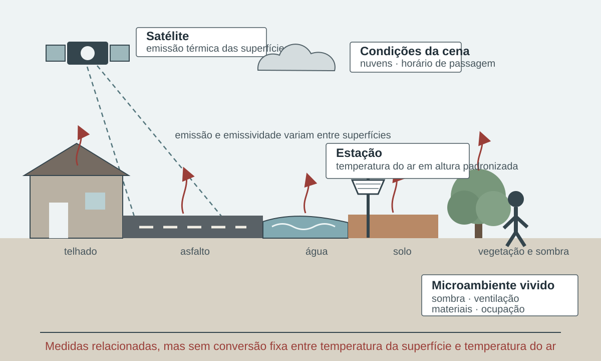

7 Temperatura e condições térmicas
Temperatura organiza um domínio amplo: condições cotidianas, extremos de calor e frio, conforto térmico, ambientes urbanos e exposição ocupacional. Embora todas essas questões se relacionem ao balanço de energia, não são intercambiáveis. Cada forma de medir deve ser escolhida de acordo com a pergunta de vigilância ou gestão.
Abrigos, sensores e diferenças entre leituras horárias e extremos registrados são detalhados no Apêndice B.
7.1 Temperatura do ar
A temperatura do ar é normalmente medida em estações meteorológicas sob condições padronizadas. O valor depende do local, da altura, do abrigo, do instrumento, da frequência de registro e do controle de qualidade. A leitura de uma estação representa seu entorno imediato; não deve ser automaticamente atribuída a todo o município (World Meteorological Organization, 2023).
Séries subdiárias permitem calcular médias, máximas e mínimas diárias. Para que esses valores sejam comparáveis, é necessário declarar:
- A janela usada para definir o dia;
- O fuso horário;
- O critério mínimo de completude;
- O tratamento de valores suspeitos;
- A estação e seus metadados;
- Mudanças de instrumento ou localização.
Temperatura máxima diária é uma variável de entrada de vários indicadores consolidados. Neste livro ela não recebe ficha autônoma: a ficha é reservada à medida que tem definição metodológica publicada e finalidade interpretativa definida.
7.2 Temperatura da superfície
Temperatura da superfície descreve a emissão térmica da superfície observada ou estimada por sensoriamento remoto. Ela pode revelar contrastes entre materiais urbanos, solo exposto, água e vegetação, sendo útil para estudos de ilhas de calor e heterogeneidade territorial (Jin, 2012).
Ela não equivale à temperatura do ar. Horário de passagem do satélite, cobertura de nuvens, emissividade, tamanho do pixel e método de recuperação afetam o produto. A ausência de valor em dia nublado também não significa ausência de calor.
Não use temperatura da superfície e temperatura do ar como medidas substitutas sem uma justificativa física e uma validação compatível com o território e a finalidade.
A distinção ganha forma na Figura 7.1, que separa o alvo observado pelo satélite, a medição do ar e o microambiente vivido.

Fonte e autoria: elaboração própria. Licença: a mesma dos textos autorais da obra.
7.3 Calor e frio
Calor e frio podem ser representados por limiares absolutos, posição na distribuição local ou combinação de duração e intensidade. Limiares absolutos são fáceis de comunicar, mas uma mesma temperatura pode ter significados diferentes conforme estação, infraestrutura, aclimatação e perfil populacional.
Limiares relativos, como percentis de uma série de referência, reconhecem o contexto climatológico. Em contrapartida, dependem da qualidade, extensão e estabilidade da série. A escolha do período de referência altera a classificação dos eventos e deve permanecer explícita (World Meteorological Organization, 2017; Zhang et al., 2005).
Medidas úteis incluem:
- Temperatura média, máxima e mínima;
- Amplitude térmica diária;
- Anomalia em relação a uma referência;
- Dias e noites quentes ou frios;
- Duração e intensidade acumulada de episódios;
- Frequência anual ou sazonal.
Cada medida responde a uma pergunta. A máxima diária representa o pico térmico do dia; a mínima pode ser importante para avaliar ausência de resfriamento noturno; a anomalia descreve diferença em relação à referência, não necessariamente risco à saúde.
7.4 Ondas de calor e de frio
Para qualquer definição de onda de calor, recomenda-se registrar:
- Início e término;
- Duração;
- Maior intensidade;
- Intensidade acumulada;
- Área atingida;
- População potencialmente exposta;
- Nível de incerteza.
7.5 Umidade, sensação e conforto térmico
A umidade influencia a troca de calor entre corpo e ambiente. Índices de sensação térmica combinam variáveis para representar aspectos do estresse térmico, mas diferem em fórmula, domínio de validade e finalidade (Masterton; Richardson, 1979; Steadman, 1994).
Ao usar um índice:
- Identifique as variáveis necessárias;
- Confira unidades e condições de validade;
- Verifique se o índice foi concebido para calor, frio, ambiente interno ou trabalho;
- Documente categorias e limiares;
- Evite interpretar o índice como temperatura medida.
Conforto térmico inclui componentes ambientais, fisiológicos, comportamentais e contextuais. Temperatura do ar, umidade, radiação e vento interagem com vestimenta, atividade, adaptação e características do ambiente construído (Bröde et al., 2012; Steadman, 1994).
Por isso, um índice de conforto não representa sozinho risco sanitário. Ele pode apoiar avaliação de ambientes e comunicação, desde que a população e a situação de uso sejam compatíveis com o método.
7.6 Ilhas de calor
Ilhas de calor descrevem diferenças térmicas entre porções urbanas e áreas de referência. Podem ser analisadas pela temperatura do ar ou da superfície, o que produz medidas distintas (Jin, 2012).
A delimitação da referência é uma decisão substantiva. Comparar o centro urbano com uma estação rural distante pode introduzir diferenças de altitude, relevo ou circulação atmosférica. Em imagens, a classificação do uso da terra, o horário e a cobertura de nuvens influenciam a estimativa.
Para uso em saúde, a medida térmica deve ser combinada com distribuição da população, condições habitacionais, mobilidade e acesso a proteção. Um mapa de temperatura sem população é um mapa de perigo, não de exposição.
7.7 Exposição ocupacional
Trabalhadores ao ar livre, em cozinhas, fundições, lavanderias, galpões e outros ambientes podem enfrentar calor intenso. A avaliação ocupacional requer medidas, índices e protocolos próprios, além de considerar esforço, vestimenta, pausas, hidratação e organização do trabalho (National Institute for Occupational Safety and Health, 2016; World Health Organization, 2025).
O WBGT (Temperatura de Globo e Bulbo Úmido) é a medida de triagem consolidada para esse domínio. A norma 7243:2017 da Organização Internacional de Normalização (ISO) o aplica à avaliação da exposição total ao longo de jornadas de até oito horas, em ambientes internos e externos, para adultos aptos ao trabalho; exposições muito curtas ficam fora desse escopo (International Organization for Standardization, 2017). A ficha apresentada adiante documenta o índice e remete a interpretação dos valores à combinação entre carga ambiental, esforço, vestimenta, aclimatação e norma aplicável. Ela não fixa um limite jurídico único, pois o valor de referência depende dessas condições e da regulamentação vigente.
7.8 Efeitos, defasagens e grupos vulnerabilizados
Condições térmicas podem se relacionar a agravos por caminhos diretos e indiretos. A análise deve considerar o desfecho específico, a escala temporal, a sazonalidade, a adaptação local e fatores que variam junto com a temperatura (Cissé et al., 2022; Romanello et al., 2024; World Health Organization, 2026).
Comparar uma curva de temperatura a uma curva de internações é insuficiente para concluir causalidade. Estudos analíticos precisam tratar tendência, sazonalidade, defasagem, qualidade do desfecho, autocorrelação e possíveis confundidores.
Alguns desfechos podem ocorrer no mesmo dia; outros aparecem após defasagem. Uma única escolha de defasagem pode omitir parte da associação ou selecionar um resultado casual. Defina janelas a priori, com justificativa substantiva, e apresente análises de sensibilidade quando aplicável.
Idade, condições crônicas, uso de medicamentos, gestação, trabalho, isolamento social, moradia, energia, água, arborização, mobilidade e acesso a serviços podem modificar risco e capacidade de proteção. Essas dimensões não devem ser reduzidas a uma lista fixa nem tratadas como atributos naturais dos grupos.
A escolha da medida começa pelo mecanismo. Para caracterizar clima, interessam distribuição, extremos, persistência e referência histórica. Para vigilância aguda, interessam previsão, temperatura observada, duração, recuperação noturna e território. Para ambiente de trabalho, radiação, vento, umidade, esforço, vestimenta e pausas podem ser indispensáveis. Para estudos epidemiológicos, a variável precisa corresponder à janela biológica e à localização da população. Uma medida adequada em uma dessas aplicações pode ser insuficiente nas demais (World Health Organization, 2025; World Meteorological Organization, 2023; World Meteorological Organization; World Health Organization, 2015).
A validação de um índice térmico tem pelo menos quatro componentes. O primeiro é matemático: fórmula, unidades e condições de aplicação foram reproduzidas. O segundo é ambiental: as entradas representam o microclima e o período de interesse. O terceiro é populacional: vestimenta, atividade, aclimatação, moradia e acesso a proteção são compatíveis com a interpretação. O quarto é decisório: categorias e limiares foram relacionados a ações e avaliados no território. Reproduzir corretamente uma fórmula não valida automaticamente um gatilho sanitário.
Indicadores relativos e absolutos cumprem papéis complementares. Percentis permitem reconhecer extremos em climas distintos, mas uma mesma categoria relativa pode corresponder a condições físicas diferentes. Limiares absolutos favorecem comunicação e proteção em contextos definidos, mas não incorporam adaptação local por si. Sistemas robustos podem acompanhar as duas referências e declarar qual delas ativa a decisão. A série usada para percentis precisa ser homogênea; a regra operacional precisa ser avaliada prospectivamente (Perkins; Alexander, 2013; World Meteorological Organization; World Health Organization, 2015; Zhang et al., 2005).
A noite merece atenção porque ausência de resfriamento reduz a oportunidade de recuperação e pode coincidir com moradias que retêm calor. Ainda assim, temperatura mínima externa não mede diretamente o quarto ou a carga fisiológica. O mesmo vale para temperatura de superfície: ela revela materiais e contrastes, mas não substitui o ar nem o ambiente interno. Combinar medidas é útil quando cada camada mantém significado próprio.
Na publicação, apresente a variável original junto ao índice sempre que possível. Informe fonte, altura ou nível, janela, fuso, período-base, completude, transformação, resolução e condição de validade. Para alertas, acrescente horizonte da previsão, hora de emissão, incerteza, autoridade e ações por nível. Para avaliação, preserve o que estava disponível no momento da decisão, não apenas a observação consolidada depois do evento (World Health Organization, 2023; World Meteorological Organization, 2023).
7.9 Fontes, seleção e principais indicadores
O catálogo inicial registra duas alternativas para temperatura:
- INMET (Instituto Nacional de Meteorologia), com observações e produtos meteorológicos;
- ERA5-Land, uma reanálise em grade.
Observação em estação e reanálise não são equivalentes. A escolha depende da pergunta, cobertura, resolução, duração da série, latência e possibilidade de validação. Em qualquer caso, arquive o identificador do produto, versão, data de acesso e transformação aplicada.
A seleção entre estação e reanálise depende do suporte necessário. Estações favorecem observação local e auditoria de instrumento, mas sua distribuição pode deixar áreas sem representação. Reanálises oferecem continuidade espacial e temporal, porém seus valores resultam de modelo e assimilação e precisam de avaliação regional. Interpolar estações ou recortar uma grade para o município são novas operações, que devem registrar método, células, ponderação e validação (Hersbach et al., 2020; World Meteorological Organization, 2023).
Produtos derivados exigem versão própria. UTCI (Índice Térmico Universal do Clima) calculado a partir de reanálise não é apenas “temperatura do ERA5 (Quinta geração da reanálise atmosférica do Centro Europeu de Previsões Meteorológicas de Médio Prazo)”; incorpora radiação, vento, umidade e modelo termofisiológico. Temperatura de superfície depende de sensor e recuperação. Percentis dependem de série-base e tratamento de calendário. A ficha deve apontar tanto para a fonte das entradas quanto para a referência do método (Copernicus Climate Change Service, 2026; Di Napoli et al., 2021; Jin, 2012).
Para combinar fontes, preserve uma hierarquia de funções. Observação local pode verificar viés; grade pode preencher cobertura; previsão pode orientar ação; série consolidada pode sustentar avaliação. Não emende valores sem período de sobreposição e teste. Se a fonte operacional falhar, o protocolo deve declarar alternativa e diferença esperada.
A literatura epidemiológica utiliza temperatura média, máxima, mínima, temperatura aparente e múltiplas definições de onda de calor. Em 54 estudos cardiovasculares, foram identificadas 21 combinações de critérios para definir calor, 12 baseadas apenas em temperatura do ar e as demais combinando fatores meteorológicos (Nawaro et al., 2023). Em uma avaliação de 29 definições aplicada a cinco tipos de atendimento em saúde, o desempenho e o limiar variaram segundo a medida e o desfecho; o resultado local de Brisbane não constitui limiar transferível para outro território (Xu et al., 2018). A orientação conjunta da OMM (Organização Meteorológica Mundial) e da OMS (Organização Mundial da Saúde) recomenda que gatilhos operacionais sejam relacionados aos efeitos locais sobre a saúde (World Meteorological Organization; World Health Organization, 2015). Não há, portanto, uma definição meteorológica única que funcione como alerta universal.
Os principais indicadores usados em saúde pública podem ser organizados em sete famílias:
- Ocorrência e contagem — ocorrência de onda de calor e número de ondas de calor (HWN);
- Frequência e duração — número total de dias em ondas de calor (HWF), duração máxima (HWD), duração média (HWMD) e WSDI (Índice de Duração de Períodos Quentes);
- Intensidade, amplitude e severidade — intensidade média (HWM/HWI), máxima ou amplitude (HWA), intensidade acumulada, EHF (Fator de excesso de calor) e HWMId (Índice diário de magnitude de ondas de calor);
- Componente noturno e composto — noites quentes durante episódios e ondas compostas diurnas e noturnas;
- Estresse térmico biometeorológico — Índice de Calor, temperatura aparente, Humidex, UTCI e WBGT;
- Extensão espacial — área atingida segundo uma definição espacialmente coerente (Skinner et al., 2025);
- Exposição populacional — pessoas ou pessoas-dia expostas à onda de calor (Lancet Countdown, 2026).
O conjunto HWN–HWF–HWD–HWM–HWA foi sistematizado como uma estrutura de múltiplos aspectos para separar número, dias participantes, persistência e magnitude dos episódios (Perkins; Alexander, 2013). EHF acrescenta significância climatológica e aclimatação recente (Nairn; Fawcett, 2015). O HWMId acumula magnitudes diárias normalizadas em relação à climatologia local (Russo; Sillmann; Fischer, 2015). Índices biometeorológicos não são variantes nominais da mesma medida: usam entradas, modelos fisiológicos, condições de referência e domínios de aplicação distintos.
7.9.1 Índices biometeorológicos: medidas distintas, não sinônimos
O Índice de Calor do National Weather Service combina temperatura do ar e umidade relativa nas condições de referência das tabelas de Steadman. A regressão de Rothfusz é usada apenas depois de uma avaliação preliminar e não deve ser extrapolada para combinações extremas fora de seu domínio (National Weather Service, 2026; Rothfusz, 1990). O Humidex também representa calor úmido, mas usa temperatura e pressão de vapor, tem fórmula própria e categorias operacionais canadenses (Environment and Climate Change Canada, 2021, 2026; Masterton; Richardson, 1979). Uma classe de Humidex, portanto, não pode ser traduzida diretamente em uma classe do Índice de Calor.
A temperatura aparente externa usada pelo Bureau of Meteorology acrescenta o efeito do vento à temperatura e à pressão de vapor. A versão operacional à sombra não incorpora radiação solar direta e representa um adulto apropriadamente vestido e caminhando (Australian Bureau of Meteorology, 2026; Steadman, 1994). UTCI segue outra lógica: sua temperatura equivalente é obtida de um modelo termofisiológico que considera temperatura do ar, radiação, umidade e vento, com vestimenta adaptativa e atividade de referência (Bröde et al., 2012). O ERA5-HEAT disponibiliza UTCI e temperatura radiante média horárias em grade global, úteis para análises retrospectivas, mas insuficientes para representar a sombra e a ventilação de uma rua, residência ou posto de trabalho (Copernicus Climate Change Service, 2026; Di Napoli et al., 2021).
WBGT foi desenvolvido para triagem de estresse térmico de pessoas fisicamente ativas e está consolidado em saúde ocupacional. Sua versão medida combina bulbo úmido natural, globo e, sob sol direto, temperatura do ar. O valor ambiental só se torna uma decisão de proteção quando interpretado com esforço, vestimenta, aclimatação e duração (International Organization for Standardization, 2017; National Institute for Occupational Safety and Health, 2016). Índice de Calor, Humidex, temperatura aparente, UTCI e WBGT não formam uma escala crescente de sofisticação: cada um responde a uma situação e conserva hipóteses próprias.
%%{init: {"htmlLabels": false, "flowchart": {"htmlLabels": false}}}%%
flowchart TD
E["Variáveis meteorológicas<br/>e contexto de uso"] --> H["Temperatura + umidade<br/>Índice de Calor ou Humidex<br/>Comunicação de calor úmido"]
E --> A["Temperatura + umidade + vento<br/>Temperatura aparente<br/>Condição externa à sombra"]
E --> U["Temperatura + umidade + vento + radiação<br/>UTCI<br/>Estresse térmico externo"]
E --> W["Bulbo úmido natural + globo + ar<br/>WBGT<br/>Triagem ocupacional e atividade física"]
H ~~~ A
A ~~~ U
U ~~~ W
O componente noturno merece medida própria. TN90p (Percentual de noites quentes) quantifica a frequência de mínimas acima do percentil local. Ondas compostas exigem simultaneamente máximas e mínimas elevadas por dias consecutivos. Em 28 cidades do leste da Ásia, ondas compostas apresentaram riscos e frações de mortalidade maiores que ondas somente diurnas ou noturnas; o estudo também aplicou o CEHWI (Índice cumulativo de excesso de calor em ondas de calor) para representar o excesso térmico acumulado além da classificação binária (Liu et al., 2025). Em 161 comunidades chinesas, eventos compostos também apresentaram riscos de mortalidade superiores aos eventos restritos ao dia ou à noite (Yang et al., 2024).
ETCCDI significa equipe de Especialistas em Detecção e Índices de Mudanças Climáticas.
| Indicador | Base metodológica | Uso em saúde pública | Cuidado de interpretação |
|---|---|---|---|
| Ocorrência e HWN | Estrutura multiaspecto de Perkins e Alexander; uso recorrente em estudos | Frequência de episódios e comparação de anos | A definição-base da onda deve permanecer explícita |
| HWF, HWD e HWMD | Estrutura multiaspecto e literatura de impactos | Dias sob episódio e persistência | Total, máximo e média não são intercambiáveis |
| HWM/HWI, HWA e intensidade acumulada | Literatura climática e epidemiológica | Gradiente térmico do episódio e severidade | Unidade, referência e limiar devem ser declarados |
| TX90p — percentual de dias quentes | Índice ETCCDI/Climdex, com correção de inhomogeneidade publicada | Caracterização de calor relativo e tendência; exposição em análises de saúde | O percentil depende do período-base e do calendário |
| WSDI — duração de períodos quentes | Índice ETCCDI/Climdex | Persistência do calor; planejamento e estudos retrospectivos | Não constitui gatilho sanitário universal |
| EHF | Método publicado e usado operacionalmente na Austrália | Intensidade, aclimatação e classificação de severidade | A classe de severidade depende da distribuição local |
| HWMId | Método percentílico publicado para magnitude diária acumulada | Comparação de magnitude entre climas | Período-base e normalização condicionam o resultado |
| Indicador | Base metodológica | Uso em saúde pública | Cuidado de interpretação |
|---|---|---|---|
| Noites quentes e ondas compostas | Aplicações em estudos de mortalidade e ausência de recuperação noturna | Exposição noturna e episódios dia–noite | A definição publicada deve especificar componentes diurno e noturno |
| Temperatura média/máxima/mínima | Uso epidemiológico amplo, mas são variáveis, não indicadores completos | Modelos de séries temporais e limiares locais | Permanecem como variáveis explicativas, sem ficha genérica |
| Definição local de onda de calor por percentil e duração | Uso frequente, com definições heterogêneas | Alertas e estudos de morbimortalidade | Requer protocolo publicado e validação local |
| Índice de Calor, temperatura aparente e Humidex | Fórmulas operacionais difundidas | Comunicação e estudos de calor úmido | Categorias de índices distintos não devem ser convertidas entre si |
| WBGT e UTCI | Índices biometeorológicos consolidados em domínios próprios | Saúde do trabalhador, atividade física e estresse térmico | População, ambiente e protocolo de medida integram a interpretação |
| Temperatura de superfície e ilha de calor | Aplicações em estudos urbanos | Identificação de heterogeneidade intraurbana | Não substituem a exposição à temperatura do ar |
| Extensão territorial | Derivação espacial de definições de onda de calor | Coordenação regional e planejamento | Exige limiar, unidade espacial e regra de conectividade |
| População ou pessoas-dia expostas | Aplicações em monitoramento internacional e estudos de exposição | Quantificação de alcance populacional | Exige superfície populacional, referência temporal e tratamento da mobilidade |
As fichas são apresentadas por indicador, e não como uma ficha genérica de “onda de calor”. As duas primeiras documentam TX90p e WSDI; as fichas subsequentes cobrem as demais famílias selecionadas. Nenhuma substitui um limiar calor–saúde validado localmente.
7.10 Ficha do indicador: Percentual de dias quentes (TX90p)
Código: CLI-TEM-01
Título resumido: Dias quentes — TX90p
Tema: Temperatura e condições térmicas
Dimensão: perigo; exposição
Disponibilidade: requer processamento climatológico
Identificação e fundamento
Base de consolidação. Índice de extremos climáticos TX90p, coordenado pelo ETCCDI e documentado pelo Climdex.
Objetivo
Monitorar a frequência relativa de dias anomalamente quentes em relação à climatologia local e produzir séries comparáveis de extremos térmicos.
Interpretação
Valores maiores indicam maior proporção de dias com máximas acima do limiar climatológico. O índice descreve extremos relativos; não equivale a uma medida clínica de estresse térmico nem a um limiar de alerta em saúde.
Usos
- Monitorar mudanças na frequência de extremos de temperatura máxima.
- Comparar períodos e áreas quando fonte, período-base e método são harmonizados.
- Caracterizar exposição ambiental em estudos de calor e saúde.
- Apoiar avaliações de risco e o desenho de sistemas de alerta validados com desfechos locais.
Limitações
- O resultado depende do período-base, da homogeneidade e da completude da série.
- Percentis relativos podem classificar como extremos valores absolutos diferentes entre localidades.
- O índice não incorpora umidade, radiação, vento, temperatura noturna ou exposição individual.
- Grades e estações representam suportes espaciais distintos.
Fontes de dados
Método de cálculo
Calcular, para cada dia do calendário, o percentil 90 de TX em uma janela centrada de cinco dias no período-base. No período de análise, contar os dias em que TX excede o limiar correspondente e dividir pelo número de dias válidos. Para o período-base, aplicar bootstrap conforme Zhang et al. para evitar descontinuidade artificial entre valores dentro e fora da base.
\[ TX90p_j = 100 \times \frac{\sum_{i \in j} I(TX_{ij} > TX^{90}_{in})}{N_j} \]
Numerador. Número de dias válidos do período j em que TX excede o percentil 90 correspondente ao dia do calendário.
Denominador. Número de dias com temperatura máxima válida no período j.
Unidade de medida. Percentual de dias (%).
Variáveis e categorias de análise. Temperatura máxima diária; dia do calendário; período-base; estação; célula de grade; mês, estação climatológica ou ano.
Granularidade. Ponto de estação ou célula de grade; sínteses territoriais requerem regra explícita e, para exposição, ponderação populacional justificável.
Periodicidade de atualização. Mensal, sazonal ou anual, conforme a finalidade e a latência da fonte.
Responsabilidade gerencial. Instituição responsável pelo serviço climático ou pela vigilância que adotar o protocolo, com governança compartilhada entre meteorologia e saúde quando usado operacionalmente.
Notas. TX90p foi escolhido por ser um índice internacionalmente coordenado. Temperatura máxima diária permanece variável de entrada e não recebe ficha própria neste catálogo.
Análise descritiva do indicador. Apresentar série do percentual, mediana e amplitude por período, tendência com incerteza e mapa somente após avaliar cobertura e homogeneidade. Evitar ordenações territoriais quando as fontes não forem comparáveis.
Campos complementares para clima, ambiente e saúde
Unidade territorial. Estação meteorológica, célula de grade ou território derivado.
Resolução espacial original. A da estação ou do produto em grade selecionado.
Resolução temporal. Entrada diária; saída mensal, sazonal ou anual.
Período de referência. O padrão clássico ETCCDI usa 1961–1990; outro período-base somente deve ser usado se declarado e mantido em toda a comparação.
Limiar ou valor de referência. Percentil 90 específico do dia do calendário, em janela móvel de cinco dias no período-base.
Disponibilidade e acesso
Cobertura geográfica. Definida pela rede de estações ou pelo domínio do produto em grade.
Período disponível. Definido pela estação ou produto; o cálculo requer série diária suficientemente longa para estimar percentis estáveis.
Periodicidade de atualização. Mensal, sazonal ou anual, conforme a finalidade e a latência da fonte.
Forma de acesso. Calculado a partir de série diária de temperatura máxima obtida na fonte documentada.
URL ou identificador persistente. https://www.climdex.org/learn/indices/
Formato dos arquivos. Tabela temporal ou matriz/arquivo multidimensional, preservando identificador, unidade e controle de qualidade.
Necessidade de processamento. Controle de qualidade, homogeneização quando aplicável, cálculo de percentis em janela móvel, bootstrap do período-base e agregação temporal.
Qualidade, comparação e saúde
Qualidade e incerteza. Relatar completude, falhas, mudanças de estação, método de homogeneização, período-base, bootstrap, viés do produto em grade e efeito da agregação espacial.
Possibilidade de comparação. Comparável somente com a mesma definição de TX90p, período-base, calendário, critério de completude, fonte ou fonte harmonizada e procedimento de bootstrap.
Relação com desfechos de saúde. TX90p é um indicador climático consolidado que pode caracterizar frequência de calor relativo em análises de morbimortalidade. Sua utilização em alerta exige validação com desfechos locais, pois limiares meteorológicos não são automaticamente limiares sanitários.
Defasagens temporais relevantes. Em estudos de saúde, definir a priori defasagens e médias móveis conforme desfecho e literatura; o índice anual não deve substituir a série diária em análises de efeitos agudos.
Aplicação na gestão. Monitorar tendência de extremos, apoiar avaliação sazonal e selecionar períodos para análise de pressão assistencial; para alertas, combinar com previsão e protocolo calor–saúde validado.
Referências metodológicas
7.11 Ficha do indicador: Índice de duração de períodos quentes (WSDI)
Código: CLI-CAL-01
Título resumido: Duração de períodos quentes — WSDI
Tema: Temperatura e condições térmicas
Dimensão: perigo; exposição
Disponibilidade: requer processamento climatológico
Identificação e fundamento
Base de consolidação. Warm Spell Duration Index (WSDI), índice ETCCDI documentado pelo Climdex.
Objetivo
Quantificar a persistência anual de períodos de calor relativo por uma definição internacionalmente coordenada de extremos climáticos.
Interpretação
O valor é a soma de todos os dias pertencentes a sequências qualificadas no ano. WSDI igual a 12 pode representar uma sequência de 12 dias ou duas sequências de 6; por isso, número e duração dos episódios podem ser apresentados como medidas auxiliares, sem alterar o indicador.
Usos
- Monitorar mudanças na persistência de períodos quentes.
- Comparar séries climáticas produzidas com o mesmo protocolo.
- Caracterizar janelas prolongadas de exposição em estudos de saúde.
- Apoiar planejamento sazonal e avaliação retrospectiva de episódios.
Limitações
- WSDI não é uma definição universal de onda de calor para alertas sanitários.
- O mínimo fixo de seis dias pode não representar a janela de efeito mais relevante para todos os desfechos.
- O índice usa temperatura máxima e não captura ausência de resfriamento noturno.
- O resultado depende do período-base e da qualidade da série.
Fontes de dados
Método de cálculo
Calcular o percentil 90 de TX por dia do calendário em janela móvel de cinco dias no período-base. Identificar todas as sequências anuais de seis ou mais dias consecutivos com TX acima do limiar e somar os dias pertencentes a essas sequências.
\[ WSDI_j = \sum_{i \in j} I\{i \text{ pertence a sequência } \geq 6 \text{ dias com } TX_{ij} > TX^{90}_{in}\} \]
Numerador. Não se aplica; trata-se de contagem de dias qualificados.
Denominador. Não se aplica.
Unidade de medida. Dias por ano.
Variáveis e categorias de análise. Temperatura máxima diária; percentil 90; período-base; ano; estação ou célula de grade.
Granularidade. Ponto de estação ou célula de grade; agregação territorial deve preservar a regra de sequência e documentar suporte.
Periodicidade de atualização. Anual; cálculos provisórios sazonais devem ser identificados como tais.
Responsabilidade gerencial. Serviço climático produtor e instituição de saúde usuária devem pactuar versão, atualização, interpretação e eventual emprego operacional.
Notas. A ficha distingue o WSDI consolidado de definições locais de onda de calor. Medidas auxiliares de número, duração máxima e intensidade dos episódios devem ser rotuladas separadamente.
Análise descritiva do indicador. Mostrar distribuição anual, anos sem períodos qualificados, duração total e, como medidas auxiliares, número de sequências e duração máxima. Relatar alterações de cobertura.
Campos complementares para clima, ambiente e saúde
Unidade territorial. Estação meteorológica, célula de grade ou território derivado.
Resolução espacial original. A da estação ou produto em grade utilizado.
Resolução temporal. Entrada diária; saída anual.
Período de referência. O padrão clássico ETCCDI usa 1961–1990; qualquer alteração deve ser declarada.
Limiar ou valor de referência. TX acima do percentil 90 do dia do calendário por pelo menos seis dias consecutivos.
Disponibilidade e acesso
Cobertura geográfica. A da rede ou produto escolhido.
Período disponível. Condicionado à existência de série diária longa e homogênea.
Periodicidade de atualização. Anual; cálculos provisórios sazonais devem ser identificados como tais.
Forma de acesso. Cálculo sobre série diária de temperatura máxima.
URL ou identificador persistente. https://www.climdex.org/learn/indices/
Formato dos arquivos. Tabela anual por estação ou arquivo multidimensional por célula de grade.
Necessidade de processamento. Controle de qualidade, percentis, bootstrap na base, detecção de sequências e soma anual.
Qualidade, comparação e saúde
Qualidade e incerteza. Documentar falhas que interrompam artificialmente sequências, homogeneidade da série, período-base, bootstrap, viés de reanálise e agregação.
Possibilidade de comparação. Exige a mesma definição ETCCDI, período-base, calendário, completude e fonte harmonizada.
Relação com desfechos de saúde. Períodos persistentes de calor podem elevar morbidade, mortalidade e pressão sobre serviços. Para vigilância operacional, a OMS e a OMM recomendam que gatilhos de alerta sejam relacionados a efeitos locais sobre a saúde, não apenas importados de um índice climático.
Defasagens temporais relevantes. WSDI anual serve a monitoramento climático. Avaliações de efeitos agudos devem conservar início, fim e série diária, examinando defasagens compatíveis com cada desfecho.
Aplicação na gestão. Avaliar evolução da persistência do calor e subsidiar planos calor–saúde. Não utilizar WSDI isoladamente como gatilho sem validação epidemiológica e previsão tempestiva.
Referências metodológicas
7.12 Ficha do indicador: Ocorrência de onda de calor
Código: CLI-CAL-02
Título resumido: Ocorrência de onda de calor
Tema: Temperatura e condições térmicas
Dimensão: perigo; exposição
Disponibilidade: requer processamento climatológico
Identificação e fundamento
Base de consolidação. Estrutura multiaspecto de ondas de calor proposta por Perkins e Alexander (2013), aplicada a episódios definidos por temperatura máxima, temperatura mínima ou EHF.
Objetivo
Identificar temporadas, meses ou territórios com ao menos um episódio qualificado.
Interpretação
Valor 1 indica uma ou mais ondas; valor 0 indica que nenhuma sequência atendeu à definição. O indicador não informa quantas ondas ocorreram nem sua duração ou intensidade.
Usos
- Delimitar períodos expostos em estudos de saúde.
- Comparar proporção de territórios com ocorrência.
- Apoiar avaliação de temporadas e cobertura de alertas.
Limitações
- Reduz múltiplos aspectos a presença/ausência.
- É sensível à definição e à falha de dados.
- Não expressa carga populacional.
Fontes de dados
Método de cálculo
Detectar episódios conforme variável, limiar e duração definidos. Atribuir 1 quando o número de episódios no período for maior ou igual a um e 0 nos demais casos.
\[ O_j = I(HWN_j \geq 1) \]
Numerador. Não se aplica.
Denominador. Não se aplica.
Unidade de medida. Indicador binário (0 ou 1); em agregações, percentual de unidades com ocorrência.
Variáveis e categorias de análise. Definição térmica; estação quente; local; estação meteorológica ou célula; faixa etária e outros estratos apenas quando combinados com dados populacionais ou de saúde.
Granularidade. Estação ou célula de grade; sínteses territoriais exigem regra explícita de agregação.
Periodicidade de atualização. Sazonal ou anual para monitoramento; versões operacionais podem ser atualizadas diariamente com previsão, sob protocolo distinto.
Responsabilidade gerencial. Serviço meteorológico ou climático produtor e instituição de saúde usuária devem pactuar definição, calendário, atualização e interpretação.
Notas. A estrutura multiaspecto separa propriedades que não devem ser usadas como sinônimos. A definição do episódio precede o cálculo de qualquer aspecto.
Análise descritiva do indicador. Apresentar ocorrência com HWN, HWF e intensidade para evitar que temporadas muito diferentes pareçam iguais.
Campos complementares para clima, ambiente e saúde
Unidade territorial. Estação meteorológica, célula de grade ou território derivado.
Resolução espacial original. A da fonte meteorológica; não atribuir automaticamente um ponto a todo o município.
Resolução temporal. Entrada diária; saída por estação quente ou ano, preservando o calendário do hemisfério e a regra para episódios que cruzam limites.
Período de referência. Período-base usado para estimar percentis e normalizar magnitudes; deve ser fixo e comum às comparações.
Limiar ou valor de referência. Pelo menos três dias consecutivos acima do percentil 90 de TX, acima do percentil 90 de TN ou com EHF positivo, conforme a definição escolhida; não misturar definições numa mesma série.
Disponibilidade e acesso
Cobertura geográfica. Determinada pela rede ou produto; a cobertura analítica depende também da completude da série.
Período disponível. O da fonte selecionada, com extensão suficiente para período-base e análise.
Periodicidade de atualização. Sazonal ou anual para monitoramento; versões operacionais podem ser atualizadas diariamente com previsão, sob protocolo distinto.
Forma de acesso. Cálculo reprodutível sobre séries diárias de temperatura máxima, mínima ou média.
URL ou identificador persistente. https://doi.org/10.1175/JCLI-D-12-00383.1
Formato dos arquivos. Tabela diária por estação ou arquivo multidimensional por célula, com códigos de qualidade e metadados.
Necessidade de processamento. Controle de qualidade, cálculo do limiar, detecção de sequências, identificação de eventos e síntese do aspecto específico.
Qualidade, comparação e saúde
Qualidade e incerteza. Relatar fonte, falhas que criem ou interrompam sequências, período-base, algoritmo de percentil, definição da estação, viés de grades e sensibilidade à definição.
Possibilidade de comparação. Exige a mesma variável térmica, limiar, período-base, duração mínima, estação, calendário, completude e tratamento de eventos de fronteira.
Relação com desfechos de saúde. Ondas de calor estão associadas a aumento de morbidade, mortalidade e demanda de serviços. A magnitude da associação varia com definição, clima, população, desfecho e adaptação.
Defasagens temporais relevantes. Para efeitos agudos, conservar datas dos eventos e analisar defasagens segundo o desfecho; a síntese sazonal não substitui a exposição diária.
Aplicação na gestão. Caracterizar episódios, comparar temporadas, apoiar planejamento calor–saúde e avaliar retrospectivamente alertas e pressão assistencial.
Referências metodológicas
7.13 Ficha do indicador: Número de ondas de calor (HWN)
Código: CLI-CAL-03
Título resumido: Número de ondas — HWN
Tema: Temperatura e condições térmicas
Dimensão: perigo; exposição
Disponibilidade: requer processamento climatológico
Identificação e fundamento
Base de consolidação. Estrutura multiaspecto de ondas de calor proposta por Perkins e Alexander (2013), aplicada a episódios definidos por temperatura máxima, temperatura mínima ou EHF.
Objetivo
Quantificar a frequência de episódios, preservando a separação entre sequências.
Interpretação
Valor maior indica mais episódios; não implica maior número total de dias nem maior intensidade.
Usos
- Comparar frequência entre temporadas.
- Avaliar recorrência de ativações operacionais.
- Descrever exposição repetida em análises de saúde.
Limitações
- Uma falha pode dividir um episódio em dois.
- Eventos de fronteira exigem regra de atribuição.
- Não distingue ondas curtas e longas.
Fontes de dados
Método de cálculo
Identificar todas as sequências que atendem à definição e contar seus inícios dentro da estação ou período, aplicando regra documentada para eventos que cruzam fronteiras.
\[ HWN_j = \sum_{e \in j} 1(e \text{ atende à definição}) \]
Numerador. Não se aplica.
Denominador. Não se aplica.
Unidade de medida. Episódios por período.
Variáveis e categorias de análise. Definição térmica; estação quente; local; estação meteorológica ou célula; faixa etária e outros estratos apenas quando combinados com dados populacionais ou de saúde.
Granularidade. Estação ou célula de grade; sínteses territoriais exigem regra explícita de agregação.
Periodicidade de atualização. Sazonal ou anual para monitoramento; versões operacionais podem ser atualizadas diariamente com previsão, sob protocolo distinto.
Responsabilidade gerencial. Serviço meteorológico ou climático produtor e instituição de saúde usuária devem pactuar definição, calendário, atualização e interpretação.
Notas. A estrutura multiaspecto separa propriedades que não devem ser usadas como sinônimos. A definição do episódio precede o cálculo de qualquer aspecto.
Análise descritiva do indicador. Mostrar HWN junto da distribuição das durações, HWF, HWM e HWA.
Campos complementares para clima, ambiente e saúde
Unidade territorial. Estação meteorológica, célula de grade ou território derivado.
Resolução espacial original. A da fonte meteorológica; não atribuir automaticamente um ponto a todo o município.
Resolução temporal. Entrada diária; saída por estação quente ou ano, preservando o calendário do hemisfério e a regra para episódios que cruzam limites.
Período de referência. Período-base usado para estimar percentis e normalizar magnitudes; deve ser fixo e comum às comparações.
Limiar ou valor de referência. Pelo menos três dias consecutivos acima do percentil 90 de TX, acima do percentil 90 de TN ou com EHF positivo, conforme a definição escolhida; não misturar definições numa mesma série.
Disponibilidade e acesso
Cobertura geográfica. Determinada pela rede ou produto; a cobertura analítica depende também da completude da série.
Período disponível. O da fonte selecionada, com extensão suficiente para período-base e análise.
Periodicidade de atualização. Sazonal ou anual para monitoramento; versões operacionais podem ser atualizadas diariamente com previsão, sob protocolo distinto.
Forma de acesso. Cálculo reprodutível sobre séries diárias de temperatura máxima, mínima ou média.
URL ou identificador persistente. https://doi.org/10.1175/JCLI-D-12-00383.1
Formato dos arquivos. Tabela diária por estação ou arquivo multidimensional por célula, com códigos de qualidade e metadados.
Necessidade de processamento. Controle de qualidade, cálculo do limiar, detecção de sequências, identificação de eventos e síntese do aspecto específico.
Qualidade, comparação e saúde
Qualidade e incerteza. Relatar fonte, falhas que criem ou interrompam sequências, período-base, algoritmo de percentil, definição da estação, viés de grades e sensibilidade à definição.
Possibilidade de comparação. Exige a mesma variável térmica, limiar, período-base, duração mínima, estação, calendário, completude e tratamento de eventos de fronteira.
Relação com desfechos de saúde. Ondas de calor estão associadas a aumento de morbidade, mortalidade e demanda de serviços. A magnitude da associação varia com definição, clima, população, desfecho e adaptação.
Defasagens temporais relevantes. Para efeitos agudos, conservar datas dos eventos e analisar defasagens segundo o desfecho; a síntese sazonal não substitui a exposição diária.
Aplicação na gestão. Caracterizar episódios, comparar temporadas, apoiar planejamento calor–saúde e avaliar retrospectivamente alertas e pressão assistencial.
Referências metodológicas
7.14 Ficha do indicador: Número total de dias em ondas de calor ou frequência de ondas de calor (HWF)
Código: CLI-CAL-04
Título resumido: Dias em ondas — HWF
Tema: Temperatura e condições térmicas
Dimensão: perigo; exposição
Disponibilidade: requer processamento climatológico
Identificação e fundamento
Base de consolidação. Estrutura multiaspecto de ondas de calor proposta por Perkins e Alexander (2013), aplicada a episódios definidos por temperatura máxima, temperatura mínima ou EHF.
Objetivo
Quantificar a carga temporal total de dias sob condições de onda de calor.
Interpretação
Valor maior indica mais dias participantes, independentemente de estarem concentrados em uma ou várias ondas.
Usos
- Medir carga sazonal de exposição.
- Calcular pessoas-dia expostas.
- Comparar temporadas com a mesma definição.
Limitações
- Não informa número de eventos.
- Pode ser igual para uma onda longa e várias curtas.
- Depende da regra para dias e eventos de fronteira.
Fontes de dados
Método de cálculo
Após detectar episódios, marcar cada dia participante uma única vez e somar as marcas no período.
\[ HWF_j = \sum_{d \in j} I(d \text{ pertence a uma onda}) \]
Numerador. Não se aplica.
Denominador. Não se aplica.
Unidade de medida. Dias por período.
Variáveis e categorias de análise. Definição térmica; estação quente; local; estação meteorológica ou célula; faixa etária e outros estratos apenas quando combinados com dados populacionais ou de saúde.
Granularidade. Estação ou célula de grade; sínteses territoriais exigem regra explícita de agregação.
Periodicidade de atualização. Sazonal ou anual para monitoramento; versões operacionais podem ser atualizadas diariamente com previsão, sob protocolo distinto.
Responsabilidade gerencial. Serviço meteorológico ou climático produtor e instituição de saúde usuária devem pactuar definição, calendário, atualização e interpretação.
Notas. A estrutura multiaspecto separa propriedades que não devem ser usadas como sinônimos. A definição do episódio precede o cálculo de qualquer aspecto.
Análise descritiva do indicador. Apresentar HWF com HWN e HWD; ao combinar com população, identificar a nova medida como exposição populacional.
Campos complementares para clima, ambiente e saúde
Unidade territorial. Estação meteorológica, célula de grade ou território derivado.
Resolução espacial original. A da fonte meteorológica; não atribuir automaticamente um ponto a todo o município.
Resolução temporal. Entrada diária; saída por estação quente ou ano, preservando o calendário do hemisfério e a regra para episódios que cruzam limites.
Período de referência. Período-base usado para estimar percentis e normalizar magnitudes; deve ser fixo e comum às comparações.
Limiar ou valor de referência. Pelo menos três dias consecutivos acima do percentil 90 de TX, acima do percentil 90 de TN ou com EHF positivo, conforme a definição escolhida; não misturar definições numa mesma série.
Disponibilidade e acesso
Cobertura geográfica. Determinada pela rede ou produto; a cobertura analítica depende também da completude da série.
Período disponível. O da fonte selecionada, com extensão suficiente para período-base e análise.
Periodicidade de atualização. Sazonal ou anual para monitoramento; versões operacionais podem ser atualizadas diariamente com previsão, sob protocolo distinto.
Forma de acesso. Cálculo reprodutível sobre séries diárias de temperatura máxima, mínima ou média.
URL ou identificador persistente. https://doi.org/10.1175/JCLI-D-12-00383.1
Formato dos arquivos. Tabela diária por estação ou arquivo multidimensional por célula, com códigos de qualidade e metadados.
Necessidade de processamento. Controle de qualidade, cálculo do limiar, detecção de sequências, identificação de eventos e síntese do aspecto específico.
Qualidade, comparação e saúde
Qualidade e incerteza. Relatar fonte, falhas que criem ou interrompam sequências, período-base, algoritmo de percentil, definição da estação, viés de grades e sensibilidade à definição.
Possibilidade de comparação. Exige a mesma variável térmica, limiar, período-base, duração mínima, estação, calendário, completude e tratamento de eventos de fronteira.
Relação com desfechos de saúde. Ondas de calor estão associadas a aumento de morbidade, mortalidade e demanda de serviços. A magnitude da associação varia com definição, clima, população, desfecho e adaptação.
Defasagens temporais relevantes. Para efeitos agudos, conservar datas dos eventos e analisar defasagens segundo o desfecho; a síntese sazonal não substitui a exposição diária.
Aplicação na gestão. Caracterizar episódios, comparar temporadas, apoiar planejamento calor–saúde e avaliar retrospectivamente alertas e pressão assistencial.
Referências metodológicas
7.15 Ficha do indicador: Duração máxima das ondas de calor (HWD)
Código: CLI-CAL-05
Título resumido: Duração máxima — HWD
Tema: Temperatura e condições térmicas
Dimensão: perigo; exposição
Disponibilidade: requer processamento climatológico
Identificação e fundamento
Base de consolidação. Estrutura multiaspecto de ondas de calor proposta por Perkins e Alexander (2013), aplicada a episódios definidos por temperatura máxima, temperatura mínima ou EHF.
Objetivo
Representar a persistência do episódio mais longo.
Interpretação
Valor maior indica uma sequência máxima mais longa; não informa duração das demais ondas nem intensidade.
Usos
- Avaliar capacidade de resposta a episódios prolongados.
- Estudar efeitos cumulativos e continuidade assistencial.
- Comparar a maior persistência entre temporadas.
Limitações
- Ignora todos os eventos exceto o mais longo.
- Falhas quebram sequências.
- Temporadas sem onda exigem convenção explícita.
Fontes de dados
Método de cálculo
Calcular a duração em dias de cada episódio e selecionar o máximo; atribuir zero quando não houver episódio, distinguindo zero de dado ausente.
\[ HWD_j = \max_{e \in j}(D_e) \]
Numerador. Não se aplica.
Denominador. Não se aplica.
Unidade de medida. Dias.
Variáveis e categorias de análise. Definição térmica; estação quente; local; estação meteorológica ou célula; faixa etária e outros estratos apenas quando combinados com dados populacionais ou de saúde.
Granularidade. Estação ou célula de grade; sínteses territoriais exigem regra explícita de agregação.
Periodicidade de atualização. Sazonal ou anual para monitoramento; versões operacionais podem ser atualizadas diariamente com previsão, sob protocolo distinto.
Responsabilidade gerencial. Serviço meteorológico ou climático produtor e instituição de saúde usuária devem pactuar definição, calendário, atualização e interpretação.
Notas. A estrutura multiaspecto separa propriedades que não devem ser usadas como sinônimos. A definição do episódio precede o cálculo de qualquer aspecto.
Análise descritiva do indicador. Apresentar o evento correspondente, datas, HWM/HWA e distribuição das demais durações.
Campos complementares para clima, ambiente e saúde
Unidade territorial. Estação meteorológica, célula de grade ou território derivado.
Resolução espacial original. A da fonte meteorológica; não atribuir automaticamente um ponto a todo o município.
Resolução temporal. Entrada diária; saída por estação quente ou ano, preservando o calendário do hemisfério e a regra para episódios que cruzam limites.
Período de referência. Período-base usado para estimar percentis e normalizar magnitudes; deve ser fixo e comum às comparações.
Limiar ou valor de referência. Pelo menos três dias consecutivos acima do percentil 90 de TX, acima do percentil 90 de TN ou com EHF positivo, conforme a definição escolhida; não misturar definições numa mesma série.
Disponibilidade e acesso
Cobertura geográfica. Determinada pela rede ou produto; a cobertura analítica depende também da completude da série.
Período disponível. O da fonte selecionada, com extensão suficiente para período-base e análise.
Periodicidade de atualização. Sazonal ou anual para monitoramento; versões operacionais podem ser atualizadas diariamente com previsão, sob protocolo distinto.
Forma de acesso. Cálculo reprodutível sobre séries diárias de temperatura máxima, mínima ou média.
URL ou identificador persistente. https://doi.org/10.1175/JCLI-D-12-00383.1
Formato dos arquivos. Tabela diária por estação ou arquivo multidimensional por célula, com códigos de qualidade e metadados.
Necessidade de processamento. Controle de qualidade, cálculo do limiar, detecção de sequências, identificação de eventos e síntese do aspecto específico.
Qualidade, comparação e saúde
Qualidade e incerteza. Relatar fonte, falhas que criem ou interrompam sequências, período-base, algoritmo de percentil, definição da estação, viés de grades e sensibilidade à definição.
Possibilidade de comparação. Exige a mesma variável térmica, limiar, período-base, duração mínima, estação, calendário, completude e tratamento de eventos de fronteira.
Relação com desfechos de saúde. Ondas de calor estão associadas a aumento de morbidade, mortalidade e demanda de serviços. A magnitude da associação varia com definição, clima, população, desfecho e adaptação.
Defasagens temporais relevantes. Para efeitos agudos, conservar datas dos eventos e analisar defasagens segundo o desfecho; a síntese sazonal não substitui a exposição diária.
Aplicação na gestão. Caracterizar episódios, comparar temporadas, apoiar planejamento calor–saúde e avaliar retrospectivamente alertas e pressão assistencial.
Referências metodológicas
7.16 Ficha do indicador: Duração média das ondas de calor (HWMD)
Código: CLI-CAL-06
Título resumido: Duração média — HWMD
Tema: Temperatura e condições térmicas
Dimensão: perigo; exposição
Disponibilidade: requer processamento climatológico
Identificação e fundamento
Base de consolidação. Estrutura multiaspecto de ondas de calor proposta por Perkins e Alexander (2013), aplicada a episódios definidos por temperatura máxima, temperatura mínima ou EHF.
Objetivo
Resumir a duração típica dos episódios identificados.
Interpretação
Valor maior indica episódios em média mais longos. A média pode ocultar distribuição assimétrica.
Usos
- Comparar duração típica entre temporadas.
- Complementar HWD e HWN.
- Planejar duração média de ações quando validado operacionalmente.
Limitações
- Indefinido quando HWN é zero.
- Instável com poucos episódios.
- Não mostra extremos nem intensidade.
Fontes de dados
Método de cálculo
Somar as durações dos episódios e dividir por HWN. Quando não houver episódios, apresentar “não se aplica” e HWN igual a zero, não duração zero.
\[ HWMD_j = \frac{\sum_{e=1}^{HWN_j}D_e}{HWN_j}, \quad HWN_j>0 \]
Numerador. Soma da duração de todos os episódios.
Denominador. Número de ondas de calor (HWN).
Unidade de medida. Dias por episódio.
Variáveis e categorias de análise. Definição térmica; estação quente; local; estação meteorológica ou célula; faixa etária e outros estratos apenas quando combinados com dados populacionais ou de saúde.
Granularidade. Estação ou célula de grade; sínteses territoriais exigem regra explícita de agregação.
Periodicidade de atualização. Sazonal ou anual para monitoramento; versões operacionais podem ser atualizadas diariamente com previsão, sob protocolo distinto.
Responsabilidade gerencial. Serviço meteorológico ou climático produtor e instituição de saúde usuária devem pactuar definição, calendário, atualização e interpretação.
Notas. A estrutura multiaspecto separa propriedades que não devem ser usadas como sinônimos. A definição do episódio precede o cálculo de qualquer aspecto.
Análise descritiva do indicador. Apresentar média, mediana, intervalo e número de eventos; não divulgar média sem HWN.
Campos complementares para clima, ambiente e saúde
Unidade territorial. Estação meteorológica, célula de grade ou território derivado.
Resolução espacial original. A da fonte meteorológica; não atribuir automaticamente um ponto a todo o município.
Resolução temporal. Entrada diária; saída por estação quente ou ano, preservando o calendário do hemisfério e a regra para episódios que cruzam limites.
Período de referência. Período-base usado para estimar percentis e normalizar magnitudes; deve ser fixo e comum às comparações.
Limiar ou valor de referência. Pelo menos três dias consecutivos acima do percentil 90 de TX, acima do percentil 90 de TN ou com EHF positivo, conforme a definição escolhida; não misturar definições numa mesma série.
Disponibilidade e acesso
Cobertura geográfica. Determinada pela rede ou produto; a cobertura analítica depende também da completude da série.
Período disponível. O da fonte selecionada, com extensão suficiente para período-base e análise.
Periodicidade de atualização. Sazonal ou anual para monitoramento; versões operacionais podem ser atualizadas diariamente com previsão, sob protocolo distinto.
Forma de acesso. Cálculo reprodutível sobre séries diárias de temperatura máxima, mínima ou média.
URL ou identificador persistente. https://doi.org/10.1175/JCLI-D-12-00383.1
Formato dos arquivos. Tabela diária por estação ou arquivo multidimensional por célula, com códigos de qualidade e metadados.
Necessidade de processamento. Controle de qualidade, cálculo do limiar, detecção de sequências, identificação de eventos e síntese do aspecto específico.
Qualidade, comparação e saúde
Qualidade e incerteza. Relatar fonte, falhas que criem ou interrompam sequências, período-base, algoritmo de percentil, definição da estação, viés de grades e sensibilidade à definição.
Possibilidade de comparação. Exige a mesma variável térmica, limiar, período-base, duração mínima, estação, calendário, completude e tratamento de eventos de fronteira.
Relação com desfechos de saúde. Ondas de calor estão associadas a aumento de morbidade, mortalidade e demanda de serviços. A magnitude da associação varia com definição, clima, população, desfecho e adaptação.
Defasagens temporais relevantes. Para efeitos agudos, conservar datas dos eventos e analisar defasagens segundo o desfecho; a síntese sazonal não substitui a exposição diária.
Aplicação na gestão. Caracterizar episódios, comparar temporadas, apoiar planejamento calor–saúde e avaliar retrospectivamente alertas e pressão assistencial.
Referências metodológicas
7.17 Ficha do indicador: Magnitude ou intensidade média das ondas de calor (HWM/HWI)
Código: CLI-CAL-07
Título resumido: Magnitude média — HWM
Tema: Temperatura e condições térmicas
Dimensão: perigo; exposição
Disponibilidade: requer processamento climatológico
Identificação e fundamento
Base de consolidação. Estrutura multiaspecto de ondas de calor proposta por Perkins e Alexander (2013), aplicada a episódios definidos por temperatura máxima, temperatura mínima ou EHF.
Objetivo
Quantificar o nível médio do calor durante os episódios.
Interpretação
Valor maior indica maior magnitude média segundo a escala escolhida. Temperatura absoluta, excesso ao limiar e magnitude normalizada não são intercambiáveis.
Usos
- Comparar intensidade média de temporadas.
- Caracterizar exposição térmica nos dias de onda.
- Relacionar gradiente de intensidade a desfechos.
Limitações
- O nome HWM/HWI é usado com fórmulas distintas.
- A média atenua picos.
- Unidade depende da medida de magnitude.
Fontes de dados
Método de cálculo
Definir a magnitude diária — temperatura, excesso ao limiar, EHF ou escala normalizada — e calcular a média em todos os dias participantes, mantendo a especificação original.
\[ HWM_j = \frac{1}{HWF_j}\sum_{d \in HW_j} M_d \]
Numerador. Soma das magnitudes diárias nos dias de onda.
Denominador. Número total de dias em ondas (HWF).
Unidade de medida. A da magnitude diária; frequentemente °C, °C acima do limiar ou unidade normalizada.
Variáveis e categorias de análise. Definição térmica; estação quente; local; estação meteorológica ou célula; faixa etária e outros estratos apenas quando combinados com dados populacionais ou de saúde.
Granularidade. Estação ou célula de grade; sínteses territoriais exigem regra explícita de agregação.
Periodicidade de atualização. Sazonal ou anual para monitoramento; versões operacionais podem ser atualizadas diariamente com previsão, sob protocolo distinto.
Responsabilidade gerencial. Serviço meteorológico ou climático produtor e instituição de saúde usuária devem pactuar definição, calendário, atualização e interpretação.
Notas. A estrutura multiaspecto separa propriedades que não devem ser usadas como sinônimos. A definição do episódio precede o cálculo de qualquer aspecto.
Análise descritiva do indicador. Declarar a variante de HWM/HWI, apresentar distribuição diária e nunca comparar unidades diferentes.
Campos complementares para clima, ambiente e saúde
Unidade territorial. Estação meteorológica, célula de grade ou território derivado.
Resolução espacial original. A da fonte meteorológica; não atribuir automaticamente um ponto a todo o município.
Resolução temporal. Entrada diária; saída por estação quente ou ano, preservando o calendário do hemisfério e a regra para episódios que cruzam limites.
Período de referência. Período-base usado para estimar percentis e normalizar magnitudes; deve ser fixo e comum às comparações.
Limiar ou valor de referência. Pelo menos três dias consecutivos acima do percentil 90 de TX, acima do percentil 90 de TN ou com EHF positivo, conforme a definição escolhida; não misturar definições numa mesma série.
Disponibilidade e acesso
Cobertura geográfica. Determinada pela rede ou produto; a cobertura analítica depende também da completude da série.
Período disponível. O da fonte selecionada, com extensão suficiente para período-base e análise.
Periodicidade de atualização. Sazonal ou anual para monitoramento; versões operacionais podem ser atualizadas diariamente com previsão, sob protocolo distinto.
Forma de acesso. Cálculo reprodutível sobre séries diárias de temperatura máxima, mínima ou média.
URL ou identificador persistente. https://doi.org/10.1175/JCLI-D-12-00383.1
Formato dos arquivos. Tabela diária por estação ou arquivo multidimensional por célula, com códigos de qualidade e metadados.
Necessidade de processamento. Controle de qualidade, cálculo do limiar, detecção de sequências, identificação de eventos e síntese do aspecto específico.
Qualidade, comparação e saúde
Qualidade e incerteza. Relatar fonte, falhas que criem ou interrompam sequências, período-base, algoritmo de percentil, definição da estação, viés de grades e sensibilidade à definição.
Possibilidade de comparação. Exige a mesma variável térmica, limiar, período-base, duração mínima, estação, calendário, completude e tratamento de eventos de fronteira.
Relação com desfechos de saúde. Ondas de calor estão associadas a aumento de morbidade, mortalidade e demanda de serviços. A magnitude da associação varia com definição, clima, população, desfecho e adaptação.
Defasagens temporais relevantes. Para efeitos agudos, conservar datas dos eventos e analisar defasagens segundo o desfecho; a síntese sazonal não substitui a exposição diária.
Aplicação na gestão. Caracterizar episódios, comparar temporadas, apoiar planejamento calor–saúde e avaliar retrospectivamente alertas e pressão assistencial.
Referências metodológicas
7.18 Ficha do indicador: Amplitude ou intensidade máxima das ondas de calor (HWA)
Código: CLI-CAL-08
Título resumido: Amplitude máxima — HWA
Tema: Temperatura e condições térmicas
Dimensão: perigo; exposição
Disponibilidade: requer processamento climatológico
Identificação e fundamento
Base de consolidação. Estrutura multiaspecto de ondas de calor proposta por Perkins e Alexander (2013), aplicada a episódios definidos por temperatura máxima, temperatura mínima ou EHF.
Objetivo
Representar o pico térmico das ondas de calor.
Interpretação
Valor maior indica pico mais intenso; não representa persistência nem carga acumulada.
Usos
- Caracterizar o pior momento da temporada.
- Avaliar demanda de pico e comunicação.
- Comparar máximos sob método comum.
Limitações
- Muito sensível a erro isolado.
- Há variantes quanto ao evento de referência.
- Não descreve duração.
Fontes de dados
Método de cálculo
Calcular magnitude diária segundo a definição e selecionar o máximo, declarando se HWA corresponde ao maior dia de qualquer onda ou ao pico da onda de maior magnitude média.
\[ HWA_j = \max_{d \in HW_j}(M_d) \]
Numerador. Não se aplica.
Denominador. Não se aplica.
Unidade de medida. A da magnitude diária.
Variáveis e categorias de análise. Definição térmica; estação quente; local; estação meteorológica ou célula; faixa etária e outros estratos apenas quando combinados com dados populacionais ou de saúde.
Granularidade. Estação ou célula de grade; sínteses territoriais exigem regra explícita de agregação.
Periodicidade de atualização. Sazonal ou anual para monitoramento; versões operacionais podem ser atualizadas diariamente com previsão, sob protocolo distinto.
Responsabilidade gerencial. Serviço meteorológico ou climático produtor e instituição de saúde usuária devem pactuar definição, calendário, atualização e interpretação.
Notas. A estrutura multiaspecto separa propriedades que não devem ser usadas como sinônimos. A definição do episódio precede o cálculo de qualquer aspecto.
Análise descritiva do indicador. Informar data, evento, qualidade do dado, HWD e HWM; validar o pico antes da publicação.
Campos complementares para clima, ambiente e saúde
Unidade territorial. Estação meteorológica, célula de grade ou território derivado.
Resolução espacial original. A da fonte meteorológica; não atribuir automaticamente um ponto a todo o município.
Resolução temporal. Entrada diária; saída por estação quente ou ano, preservando o calendário do hemisfério e a regra para episódios que cruzam limites.
Período de referência. Período-base usado para estimar percentis e normalizar magnitudes; deve ser fixo e comum às comparações.
Limiar ou valor de referência. Pelo menos três dias consecutivos acima do percentil 90 de TX, acima do percentil 90 de TN ou com EHF positivo, conforme a definição escolhida; não misturar definições numa mesma série.
Disponibilidade e acesso
Cobertura geográfica. Determinada pela rede ou produto; a cobertura analítica depende também da completude da série.
Período disponível. O da fonte selecionada, com extensão suficiente para período-base e análise.
Periodicidade de atualização. Sazonal ou anual para monitoramento; versões operacionais podem ser atualizadas diariamente com previsão, sob protocolo distinto.
Forma de acesso. Cálculo reprodutível sobre séries diárias de temperatura máxima, mínima ou média.
URL ou identificador persistente. https://doi.org/10.1175/JCLI-D-12-00383.1
Formato dos arquivos. Tabela diária por estação ou arquivo multidimensional por célula, com códigos de qualidade e metadados.
Necessidade de processamento. Controle de qualidade, cálculo do limiar, detecção de sequências, identificação de eventos e síntese do aspecto específico.
Qualidade, comparação e saúde
Qualidade e incerteza. Relatar fonte, falhas que criem ou interrompam sequências, período-base, algoritmo de percentil, definição da estação, viés de grades e sensibilidade à definição.
Possibilidade de comparação. Exige a mesma variável térmica, limiar, período-base, duração mínima, estação, calendário, completude e tratamento de eventos de fronteira.
Relação com desfechos de saúde. Ondas de calor estão associadas a aumento de morbidade, mortalidade e demanda de serviços. A magnitude da associação varia com definição, clima, população, desfecho e adaptação.
Defasagens temporais relevantes. Para efeitos agudos, conservar datas dos eventos e analisar defasagens segundo o desfecho; a síntese sazonal não substitui a exposição diária.
Aplicação na gestão. Caracterizar episódios, comparar temporadas, apoiar planejamento calor–saúde e avaliar retrospectivamente alertas e pressão assistencial.
Referências metodológicas
7.19 Ficha do indicador: Fator de Excesso de Calor (EHF)
Código: CLI-CAL-09
Título resumido: Fator de Excesso de Calor — EHF
Tema: Temperatura e condições térmicas
Dimensão: perigo; exposição
Disponibilidade: requer processamento climatológico
Identificação e fundamento
Base de consolidação. Excess Heat Factor de Nairn e Fawcett, usado para intensidade e classificação de severidade de ondas de calor.
Objetivo
Identificar calor excepcional e recente, incorporando intensidade climatológica e aclimatação de curto prazo.
Interpretação
EHF positivo identifica condições de onda de calor na especificação original; valores positivos maiores indicam maior intensidade. A classificação de severidade requer distribuição local do EHF positivo.
Usos
- Monitoramento e previsão de ondas de calor.
- Classificação relativa de intensidade e severidade.
- Avaliação de utilização de serviços e gatilhos validados.
Limitações
- Depende de 33 dias consecutivos de dados.
- Percentil e aclimatação são locais.
- Valores em °C² não têm interpretação clínica direta.
- Desempenho sanitário deve ser validado.
Fontes de dados
Método de cálculo
Calcular a média de temperatura média diária dos dias d a d+2. Subtrair o percentil 95 para obter EHIsig e a média dos 30 dias anteriores para obter EHIaccl. Multiplicar EHIsig pelo máximo entre 1 e EHIaccl.
\[ \begin{aligned} EHF_d &= EHI_{sig,d}\max(1,EHI_{accl,d}),\\ EHI_{sig,d} &= \overline{T}_{d:d+2}-T_{95},\\ EHI_{accl,d} &= \overline{T}_{d:d+2}-\overline{T}_{d-30:d-1}. \end{aligned} \]
Numerador. Não se aplica.
Denominador. Não se aplica.
Unidade de medida. Grau Celsius ao quadrado (°C²), segundo a formulação operacional.
Variáveis e categorias de análise. Temperatura máxima e mínima diárias ou temperatura média; local; período-base; episódio; temporada.
Granularidade. Estação ou célula de grade; extensão regional é uma derivação posterior.
Periodicidade de atualização. Diária em aplicação operacional ou anual em monitoramento climático.
Responsabilidade gerencial. Serviço meteorológico ou climático que produza o índice e instituição de saúde que valide seu uso.
Notas. Estes índices combinam mais de um aspecto do calor. Seus valores não são equivalentes a temperatura do ar nem a risco relativo.
Análise descritiva do indicador. Mostrar EHF diário, início e fim, pico, soma por episódio e classe de severidade com referência local.
Campos complementares para clima, ambiente e saúde
Unidade territorial. Estação meteorológica, célula de grade ou território derivado.
Resolução espacial original. A da série meteorológica selecionada.
Resolução temporal. Entrada diária; saída diária, por episódio e anual.
Período de referência. Período climatológico usado para o percentil 95 e histórico local de EHF positivo para severidade.
Limiar ou valor de referência. EHF maior que zero para condição de onda de calor; categorias de severidade derivam da distribuição local conforme o método.
Disponibilidade e acesso
Cobertura geográfica. A da fonte, condicionada à qualidade e à extensão da série.
Período disponível. O da fonte, incluindo período-base suficiente.
Periodicidade de atualização. Diária em aplicação operacional ou anual em monitoramento climático.
Forma de acesso. Cálculo sobre série diária com implementação e parâmetros versionados.
URL ou identificador persistente. https://doi.org/10.3390/ijerph120100227
Formato dos arquivos. Tabela por estação ou arquivo multidimensional por célula.
Necessidade de processamento. Calcular temperatura média diária, percentil 95, médias móveis de 3 e 30 dias, EHI e EHF; preservar resultados diários.
Qualidade, comparação e saúde
Qualidade e incerteza. Relatar falhas, homogeneidade, período-base, algoritmo de percentil, viés da fonte e sensibilidade aos parâmetros.
Possibilidade de comparação. Manter fórmula, período-base, calendário, fonte harmonizada e tratamento de falhas; variantes não são intercambiáveis.
Relação com desfechos de saúde. Índices de magnitude e severidade podem ordenar episódios e apoiar a avaliação de impactos, mas seu gradiente deve ser validado com desfechos e capacidade de resposta locais.
Defasagens temporais relevantes. Preservar os valores diários e datas para estudar efeitos no mesmo dia e defasados.
Aplicação na gestão. Classificar episódios, contextualizar alertas e avaliar retrospectivamente pressão sobre serviços.
Referências metodológicas
7.20 Ficha do indicador: Índice Diário de Magnitude de Ondas de Calor (HWMId)
Código: CLI-CAL-10
Título resumido: Magnitude diária — HWMId
Tema: Temperatura e condições térmicas
Dimensão: perigo; exposição
Disponibilidade: requer processamento climatológico
Identificação e fundamento
Base de consolidação. Heat Wave Magnitude Index daily de Russo, Sillmann e Fischer.
Objetivo
Combinar duração e anomalia térmica em uma escala relativa para comparar a maior onda de cada ano entre climas.
Interpretação
Valor maior indica que a onda anual mais expressiva foi mais longa e/ou apresentou máximas mais anômalas na escala local. É adimensional e não representa probabilidade de dano.
Usos
- Comparar magnitude de ondas entre regiões.
- Monitorar mudanças na severidade.
- Caracterizar exposição em estudos de impactos.
Limitações
- Destaca apenas a onda de maior magnitude do ano.
- A normalização e o período-base afetam o valor.
- Não foi concebido como limiar clínico ou alerta isolado.
Fontes de dados
Método de cálculo
Definir onda como ao menos três dias com TX acima do percentil 90 específico do calendário em janela de 31 dias. Calcular a magnitude diária pela posição de TX em relação aos percentis 25 e 75 das máximas anuais do período-base, truncar negativos em zero, somar por evento e selecionar o maior total anual.
\[ M_d=\max\left(0,\frac{TX_d-T^{ann}_{25}}{T^{ann}_{75}-T^{ann}_{25}}\right);\quad HWMId_j=\max_{e\in j}\sum_{d\in e}M_d \]
Numerador. Na magnitude diária, diferença entre TX do dia e percentil 25 das máximas anuais no período-base.
Denominador. Amplitude interquartil entre os percentis 75 e 25 das máximas anuais no período-base.
Unidade de medida. Adimensional.
Variáveis e categorias de análise. Temperatura máxima e mínima diárias ou temperatura média; local; período-base; episódio; temporada.
Granularidade. Estação ou célula de grade; extensão regional é uma derivação posterior.
Periodicidade de atualização. Diária em aplicação operacional ou anual em monitoramento climático.
Responsabilidade gerencial. Serviço meteorológico ou climático que produza o índice e instituição de saúde que valide seu uso.
Notas. Estes índices combinam mais de um aspecto do calor. Seus valores não são equivalentes a temperatura do ar nem a risco relativo.
Análise descritiva do indicador. Apresentar HWMId anual e decompor a onda máxima em duração, magnitudes diárias, datas e área afetada.
Campos complementares para clima, ambiente e saúde
Unidade territorial. Estação meteorológica, célula de grade ou território derivado.
Resolução espacial original. A da série meteorológica selecionada.
Resolução temporal. Entrada diária; saída diária, por episódio e anual.
Período de referência. Período climatológico de 30 anos; a formulação publicada deve ser seguida e declarada.
Limiar ou valor de referência. TX acima do percentil 90 em janela móvel de 31 dias por pelo menos três dias consecutivos.
Disponibilidade e acesso
Cobertura geográfica. A da fonte, condicionada à qualidade e à extensão da série.
Período disponível. O da fonte, incluindo período-base suficiente.
Periodicidade de atualização. Diária em aplicação operacional ou anual em monitoramento climático.
Forma de acesso. Cálculo sobre série diária com implementação e parâmetros versionados.
URL ou identificador persistente. https://doi.org/10.1088/1748-9326/10/12/124003
Formato dos arquivos. Tabela por estação ou arquivo multidimensional por célula.
Necessidade de processamento. Percentis diários, detecção de sequências, percentis das máximas anuais, magnitude diária, soma por episódio e máximo anual.
Qualidade, comparação e saúde
Qualidade e incerteza. Relatar falhas, homogeneidade, período-base, algoritmo de percentil, viés da fonte e sensibilidade aos parâmetros.
Possibilidade de comparação. Manter fórmula, período-base, calendário, fonte harmonizada e tratamento de falhas; variantes não são intercambiáveis.
Relação com desfechos de saúde. Índices de magnitude e severidade podem ordenar episódios e apoiar a avaliação de impactos, mas seu gradiente deve ser validado com desfechos e capacidade de resposta locais.
Defasagens temporais relevantes. Preservar os valores diários e datas para estudar efeitos no mesmo dia e defasados.
Aplicação na gestão. Classificar episódios, contextualizar alertas e avaliar retrospectivamente pressão sobre serviços.
Referências metodológicas
7.21 Ficha do indicador: Percentual de noites quentes (TN90p)
Código: CLI-CAL-11
Título resumido: Noites quentes — TN90p
Tema: Temperatura e condições térmicas
Dimensão: perigo; exposição
Disponibilidade: requer processamento climatológico
Identificação e fundamento
Base de consolidação. Índice de extremos climáticos TN90p, coordenado pelo ETCCDI e documentado pelo Climdex.
Objetivo
Medir a frequência relativa de noites excepcionalmente quentes para o clima local.
Interpretação
Valor de 20% indica que, entre os dias válidos do período, uma em cada cinco mínimas excedeu o limiar climatológico correspondente. O índice não identifica sozinho ondas nem dose individual.
Usos
- Monitorar tendência de noites quentes.
- Caracterizar ausência de resfriamento noturno.
- Apoiar estudos de morbimortalidade e desigualdade térmica.
Limitações
- Não exige dias consecutivos.
- A mínima meteorológica diária pode não coincidir com o período noturno civil.
- Período-base e algoritmo de percentil condicionam o valor.
- Estação externa não representa necessariamente o interior da moradia.
Fontes de dados
Método de cálculo
Calcular o percentil 90 de TN para cada dia do calendário, em janela centrada de cinco dias no período-base. Contar no período analisado os dias válidos em que TN excede o limiar correspondente e dividir pelo total de dias válidos; no período-base, aplicar o procedimento de bootstrap do ETCCDI.
\[ TN90p_p=100\times\frac{\sum_{d\in p}I(TN_d>TN90_{cal(d)})}{N_{válidos,p}} \]
Numerador. Número de dias válidos com TN acima do percentil 90 do calendário.
Denominador. Total de dias com TN válida no período.
Unidade de medida. Percentual (%).
Variáveis e categorias de análise. Temperatura mínima diária; dia do calendário; estação do ano; ano; local.
Granularidade. Valor diário binário e resumo mensal, sazonal ou anual.
Periodicidade de atualização. Anual em monitoramento climático; diária apenas em implementação operacional distinta.
Responsabilidade gerencial. Serviço meteorológico ou climático responsável pela exposição e autoridade de saúde responsável por validar o uso.
Notas. As definições publicadas abaixo são reproduzidas para comparabilidade. Seu uso como gatilho operacional depende de validação com desfechos locais.
Análise descritiva do indicador. Apresentar TN90p com número de dias válidos, tendência, sazonalidade, distribuição territorial e, quando pertinente, associação com desfechos preservando a série diária.
Campos complementares para clima, ambiente e saúde
Unidade territorial. Estação meteorológica, célula de grade ou território derivado.
Resolução espacial original. A da série meteorológica; a atribuição territorial exige método explícito.
Resolução temporal. Entrada diária; saída mensal, sazonal ou anual.
Período de referência. Período climatológico declarado, com 30 anos quando viável; não misturar bases.
Limiar ou valor de referência. Percentil 90 de TN específico do dia do calendário.
Disponibilidade e acesso
Cobertura geográfica. A da fonte meteorológica selecionada.
Período disponível. O da fonte, com extensão suficiente para o período-base.
Periodicidade de atualização. Anual em monitoramento climático; diária apenas em implementação operacional distinta.
Forma de acesso. Cálculo sobre série diária controlada, preferencialmente com implementação ETCCDI validada.
URL ou identificador persistente. https://www.climdex.org/learn/indices/
Formato dos arquivos. Tabela por estação ou matriz multidimensional por célula.
Necessidade de processamento. Controle de qualidade, percentis do calendário, bootstrap do período-base, teste diário e agregação.
Qualidade, comparação e saúde
Qualidade e incerteza. Relatar falhas, homogeneidade, período-base, algoritmo de percentil, definição temporal de dia e noite, viés de produtos em grade e sensibilidade aos parâmetros.
Possibilidade de comparação. Manter variável, período-base, janela do calendário, duração mínima, fonte, resolução e regra de agregação; classificações distintas não são intercambiáveis.
Relação com desfechos de saúde. A mínima elevada indica ausência de resfriamento noturno. Episódios compostos combinam calor diurno e noturno, condição associada a maior risco de mortalidade em estudos multicêntricos.
Defasagens temporais relevantes. Preservar datas e valores diários ou horários para estimar efeitos no mesmo dia e defasados; não reduzir a exposição a uma contagem anual em análises de efeitos agudos.
Aplicação na gestão. Incorporar persistência noturna e episódios compostos em vigilância calor–saúde, planejamento de comunicação e avaliação retrospectiva.
Referências metodológicas
7.22 Ficha do indicador: Frequência de dias em ondas de calor compostas diurnas e noturnas (CHW)
Código: CLI-CAL-12
Título resumido: Dias em ondas compostas — CHW
Tema: Temperatura e condições térmicas
Dimensão: perigo; exposição
Disponibilidade: requer processamento climatológico
Identificação e fundamento
Base de consolidação. Definição epidemiológica multicêntrica de Liu et al. para ondas diurnas, noturnas e compostas no leste da Ásia.
Objetivo
Quantificar dias sem alívio térmico entre o período diurno e o noturno segundo uma definição aplicada à mortalidade.
Interpretação
Valor maior indica mais dias em episódios compostos. Deve ser lido junto com número, duração e intensidade das ondas, pois a mesma frequência pode resultar de poucos episódios longos ou vários curtos.
Usos
- Caracterizar exposição composta dia–noite.
- Avaliar mortalidade e utilização de serviços durante episódios.
- Apoiar sistemas de alerta que considerem recuperação noturna.
Limitações
- A duração de dois dias e o percentil 90 refletem a especificação publicada
- Não um limiar universal.
- Depende da qualidade conjunta de TX e TN.
- Não mede condições internas
- Proteção individual ou acesso a resfriamento.
- Classificações de onda diurna
- Noturna e composta são mutuamente condicionadas.
Fontes de dados
Método de cálculo
Para cada dia, comparar TX e TN aos respectivos percentis 90 específicos do calendário, obtidos em janela móvel centrada de 15 dias no período 1981–2010. Identificar sequências de pelo menos dois dias em que ambas atingem ou excedem o limiar e somar todos os dias participantes.
\[ CHWF_p=\sum_{d\in p}I\{d\ pertence\ a\ sequência\geq2:\ TX_d\geq TX90_{cal(d)}\ \land\ TN_d\geq TN90_{cal(d)}\} \]
Numerador. Não se aplica; soma de dias participantes.
Denominador. Não se aplica.
Unidade de medida. Dias por período.
Variáveis e categorias de análise. Temperatura máxima e mínima diárias; percentis do calendário; episódio; local; temporada.
Granularidade. Detecção diária e resumo por episódio, estação quente ou ano.
Periodicidade de atualização. Diária em vigilância operacional ou sazonal em avaliação.
Responsabilidade gerencial. Serviço meteorológico ou climático responsável pela exposição e autoridade de saúde responsável por validar o uso.
Notas. As definições publicadas abaixo são reproduzidas para comparabilidade. Seu uso como gatilho operacional depende de validação com desfechos locais.
Análise descritiva do indicador. Apresentar dias CHW, número e duração dos episódios, datas, TX e TN excedentes e comparação com ondas somente diurnas e somente noturnas.
Campos complementares para clima, ambiente e saúde
Unidade territorial. Estação meteorológica, célula de grade ou território derivado.
Resolução espacial original. A da série meteorológica; a atribuição territorial exige método explícito.
Resolução temporal. Entrada diária; saída diária, por episódio e sazonal.
Período de referência. 1981–2010 na especificação publicada; outra base caracteriza adaptação e deve ser identificada como tal.
Limiar ou valor de referência. TX e TN iguais ou superiores aos respectivos percentis 90 do calendário por pelo menos dois dias consecutivos.
Disponibilidade e acesso
Cobertura geográfica. A da fonte meteorológica selecionada.
Período disponível. O da fonte, incluindo o período-base e o período de análise.
Periodicidade de atualização. Diária em vigilância operacional ou sazonal em avaliação.
Forma de acesso. Cálculo sobre séries diárias harmonizadas de TX e TN.
URL ou identificador persistente. https://doi.org/10.1038/s41467-025-56067-7
Formato dos arquivos. Tabela diária e tabela de episódios; grade multidimensional quando espacializado.
Necessidade de processamento. Controle de qualidade, percentis em janela de 15 dias, classificação conjunta e detecção de sequências.
Qualidade, comparação e saúde
Qualidade e incerteza. Relatar falhas, homogeneidade, período-base, algoritmo de percentil, definição temporal de dia e noite, viés de produtos em grade e sensibilidade aos parâmetros.
Possibilidade de comparação. Manter variável, período-base, janela do calendário, duração mínima, fonte, resolução e regra de agregação; classificações distintas não são intercambiáveis.
Relação com desfechos de saúde. A mínima elevada indica ausência de resfriamento noturno. Episódios compostos combinam calor diurno e noturno, condição associada a maior risco de mortalidade em estudos multicêntricos.
Defasagens temporais relevantes. Preservar datas e valores diários ou horários para estimar efeitos no mesmo dia e defasados; não reduzir a exposição a uma contagem anual em análises de efeitos agudos.
Aplicação na gestão. Incorporar persistência noturna e episódios compostos em vigilância calor–saúde, planejamento de comunicação e avaliação retrospectiva.
Referências metodológicas
7.23 Ficha do indicador: Índice Cumulativo de Excesso de Calor em Ondas de Calor (CEHWI)
Código: CLI-CAL-13
Título resumido: Excesso acumulado — CEHWI
Tema: Temperatura e condições térmicas
Dimensão: perigo; exposição
Disponibilidade: requer processamento climatológico
Identificação e fundamento
Base de consolidação. Cumulative Excess Heatwave Index aplicado por Liu et al. às relações não lineares entre ondas diurnas, noturnas e compostas e mortalidade.
Objetivo
Representar simultaneamente excesso térmico e persistência durante ondas diurnas, noturnas ou compostas, sem reduzi-las a uma exposição binária.
Interpretação
Valor diário maior indica excesso médio mais elevado entre as horas acima do limiar. A soma ao longo da onda representa acumulação; seu gradiente de risco depende do tipo de onda, cidade e desfecho.
Usos
- Modelar relações exposição–resposta com mortalidade.
- Comparar intensidade de ondas diurnas
- Noturnas e compostas.
- Estimar carga atribuível em estudos epidemiológicos.
Limitações
- Requer dados horários e horários locais de nascer e pôr do sol.
- A definição publicada foi avaliada em cidades do leste da Ásia.
- O limiar varia por calendário e local.
- Não é índice fisiológico nem protocolo de alerta universal.
Fontes de dados
Método de cálculo
Classificar ondas como diurnas, noturnas ou compostas. Dividir o dia em noite, dia e entardecer conforme nascer e pôr do sol. Para cada hora do período pertinente, subtrair o limiar diário local — TX90 para onda diurna, TN90 para noturna e Tmean90 para composta —, manter apenas diferenças positivas, somá-las e dividir pelo número de horas com excesso. Somar os valores diários quando a finalidade for representar o episódio.
\[ CEHWI_{ig}=\frac{\sum_{j=1}^{N_{ig}}(t_{jg}-Thr_{ig})I(t_{jg}>Thr_{ig})}{n_{ig}} \]
Numerador. Soma dos excessos horários positivos sobre o limiar pertinente no dia e tipo de onda.
Denominador. Número de horas do período da onda em que a temperatura excede o limiar.
Unidade de medida. Grau Celsius (°C) por dia; soma de °C-dia quando acumulado no episódio, conforme especificação declarada.
Variáveis e categorias de análise. Temperatura horária; TX, TN e temperatura média; nascer e pôr do sol; tipo de onda; episódio; cidade.
Granularidade. Valor diário por tipo de onda e soma por episódio.
Periodicidade de atualização. Diária em aplicação operacional ou por estudo epidemiológico.
Responsabilidade gerencial. Serviço meteorológico ou climático responsável pela exposição e autoridade de saúde responsável por validar o uso.
Notas. As definições publicadas abaixo são reproduzidas para comparabilidade. Seu uso como gatilho operacional depende de validação com desfechos locais.
Análise descritiva do indicador. Mostrar distribuição do CEHWI por tipo de onda, trajetória diária, total por episódio, percentis locais e curvas exposição–resposta com intervalos de incerteza.
Campos complementares para clima, ambiente e saúde
Unidade territorial. Estação meteorológica, célula de grade ou território derivado.
Resolução espacial original. A da série meteorológica; a atribuição territorial exige método explícito.
Resolução temporal. Entrada horária; saída diária e por episódio.
Período de referência. 1981–2010 e janela móvel de 15 dias na aplicação publicada.
Limiar ou valor de referência. Percentil 90 diário local de TX, TN ou temperatura média, conforme o tipo de onda.
Disponibilidade e acesso
Cobertura geográfica. A da fonte meteorológica selecionada.
Período disponível. O da fonte horária, incluindo período-base adequado.
Periodicidade de atualização. Diária em aplicação operacional ou por estudo epidemiológico.
Forma de acesso. Cálculo sobre temperatura horária e efemérides locais, com código e parâmetros versionados.
URL ou identificador persistente. https://doi.org/10.1038/s41467-025-56067-7
Formato dos arquivos. Tabela horária de entrada e tabela diária/por episódio de saída.
Necessidade de processamento. Reconstruir TX, TN e média, calcular percentis, classificar ondas e períodos do dia, calcular excessos horários e acumular.
Qualidade, comparação e saúde
Qualidade e incerteza. Relatar falhas, homogeneidade, período-base, algoritmo de percentil, definição temporal de dia e noite, viés de produtos em grade e sensibilidade aos parâmetros.
Possibilidade de comparação. Manter variável, período-base, janela do calendário, duração mínima, fonte, resolução e regra de agregação; classificações distintas não são intercambiáveis.
Relação com desfechos de saúde. A mínima elevada indica ausência de resfriamento noturno. Episódios compostos combinam calor diurno e noturno, condição associada a maior risco de mortalidade em estudos multicêntricos.
Defasagens temporais relevantes. Preservar datas e valores diários ou horários para estimar efeitos no mesmo dia e defasados; não reduzir a exposição a uma contagem anual em análises de efeitos agudos.
Aplicação na gestão. Incorporar persistência noturna e episódios compostos em vigilância calor–saúde, planejamento de comunicação e avaliação retrospectiva.
Referências metodológicas
7.24 Ficha do indicador: Índice de Calor do National Weather Service (Heat Index)
Código: CLI-EST-01
Título resumido: Índice de Calor — HI
Tema: Temperatura e condições térmicas
Dimensão: perigo; exposição
Disponibilidade: requer processamento meteorológico
Identificação e fundamento
Base de consolidação. Regressão de Rothfusz adotada operacionalmente pelo National Weather Service dos Estados Unidos a partir das tabelas de Steadman.
Objetivo
Representar o efeito conjunto de calor e umidade para comunicação e triagem de condições quentes.
Interpretação
Valores maiores indicam maior carga térmica aparente nas condições assumidas. O resultado não incorpora diretamente radiação solar, vento variável, esforço, vestimenta, aclimatação ou suscetibilidade clínica.
Usos
- Comunicar calor úmido.
- Caracterizar horas ou dias com Índice de Calor elevado.
- Apoiar estudos epidemiológicos e protocolos calor–saúde que tenham validado localmente a exposição.
Limitações
- A regressão completa é aplicada quando a estimativa preliminar atinge pelo menos 80 °F.
- A fórmula não é válida fora da faixa de temperatura e umidade dos dados de Steadman.
- Sol direto pode elevar substancialmente a carga térmica.
- As categorias do NWS são orientação operacional estadunidense e não limiares sanitários universais.
Fontes de dados
Método de cálculo
Converter a temperatura para graus Fahrenheit. Calcular primeiro a aproximação simples de Steadman e tirar sua média com a temperatura observada. Se essa média for inferior a 80 °F, usar o resultado simples. Se atingir 80 °F, aplicar a regressão de Rothfusz e os ajustes oficiais para umidade muito baixa ou muito alta nas faixas especificadas pelo NWS. Converter para graus Celsius apenas ao final, quando necessário.
\[ \begin{aligned} HI={}&-42{,}379+2{,}04901523T+10{,}14333127RH\\ &-0{,}22475541TRH-0{,}00683783T^2-0{,}05481717RH^2\\ &+0{,}00122874T^2RH+0{,}00085282TRH^2\\ &-0{,}00000199T^2RH^2. \end{aligned} \]
Numerador. Não se aplica; combinação polinomial de temperatura e umidade relativa.
Denominador. Não se aplica.
Unidade de medida. Grau Fahrenheit (°F) na fórmula original; pode ser convertido para grau Celsius (°C) após o cálculo.
Variáveis e categorias de análise. Temperatura do ar em °F; umidade relativa em %; hora; local; categoria operacional, se adotada e validada.
Granularidade. Valor por observação sincronizada; resumos por hora, dia, episódio ou território.
Periodicidade de atualização. Horária ou conforme a observação meteorológica.
Responsabilidade gerencial. Serviço meteorológico ou equipe de saúde ambiental ou do trabalhador responsável pela medição, com autoridade de saúde responsável pelo protocolo de uso.
Notas. O valor é uma temperatura ou índice equivalente, não a temperatura corporal nem uma medição direta de risco individual. Categorias operacionais de outro país não constituem automaticamente limiares de alerta no Brasil.
Análise descritiva do indicador. Apresentar máximos diários, horas acima das categorias adotadas, distribuição territorial, completude e comparação com temperatura do ar, sem converter categorias de outros índices.
Campos complementares para clima, ambiente e saúde
Unidade territorial. Ponto de observação, célula de grade ou território obtido por agregação explícita.
Resolução espacial original. Ponto de estação ou célula do produto meteorológico.
Resolução temporal. Preferencialmente horária ou subdiária; não calcular a partir de médias mensais.
Período de referência. Não exige climatologia para o cálculo; comparações temporais requerem série e método estáveis.
Limiar ou valor de referência. Aplicar a regressão completa quando a média entre a aproximação inicial e T for pelo menos 80 °F; demais categorias devem ser identificadas com a fonte e validadas para a finalidade.
Disponibilidade e acesso
Cobertura geográfica. A da fonte meteorológica ou do levantamento microambiental selecionado.
Período disponível. O período comum às séries de temperatura e umidade.
Periodicidade de atualização. Horária ou conforme a observação meteorológica.
Forma de acesso. Cálculo sobre observações sincronizadas, com implementação e ajustes versionados.
URL ou identificador persistente. https://www.weather.gov/ctp/heat
Formato dos arquivos. Tabela horária por estação ou matriz multidimensional por célula.
Necessidade de processamento. Controle de qualidade, conversão de unidades, cálculo preliminar, escolha da equação, ajustes de umidade e agregação temporal.
Qualidade, comparação e saúde
Qualidade e incerteza. Verificar unidades, altura e abrigo dos sensores, sincronização das variáveis, dados ausentes, domínio de validade da fórmula, representatividade espacial e diferença entre valor medido e modelado.
Possibilidade de comparação. Manter fórmula, versão, entradas, unidades, altura do vento, tratamento da radiação, resolução temporal e regra de agregação; índices diferentes não são conversíveis por uma escala comum.
Relação com desfechos de saúde. Calor úmido reduz a eficiência da evaporação do suor; o índice é usado em comunicação e estudos de calor, mas não representa resposta fisiológica individual.
Defasagens temporais relevantes. Preservar valores horários e diários para relacionar exposições agudas a desfechos no mesmo dia e em dias subsequentes; a agregação anual não serve para estimar efeitos de curto prazo.
Aplicação na gestão. Apoiar comunicação de risco e vigilância de calor úmido quando o protocolo declarar a fórmula, as hipóteses e os limiares locais de ação.
Referências metodológicas
7.25 Ficha do indicador: Temperatura aparente externa de Steadman adotada pelo Bureau of Meteorology
Código: CLI-EST-02
Título resumido: Temperatura aparente — AT
Tema: Temperatura e condições térmicas
Dimensão: perigo; exposição
Disponibilidade: requer processamento meteorológico
Identificação e fundamento
Base de consolidação. Equação de temperatura aparente de Steadman usada pelo Bureau of Meteorology da Austrália para representar a ação conjunta de temperatura, pressão de vapor e vento.
Objetivo
Resumir em uma escala térmica o efeito combinado de calor ou frio, umidade e vento nas condições de referência.
Interpretação
A diferença entre AT e a temperatura do ar mostra quanto umidade e vento alteram a condição equivalente no modelo. AT maior que a temperatura indica condição aparente mais quente; AT menor, resfriamento aparente.
Usos
- Comunicação meteorológica de sensação térmica.
- Caracterização de exposição térmica externa.
- Estudos de saúde que especifiquem a equação de AT empregada.
Limitações
- A equação operacional não incorpora radiação solar direta.
- Representa uma pessoa de referência
- Não indivíduos com diferentes atividades
- Roupas ou condições clínicas.
- Pressão de vapor
- Vento e temperatura precisam ser simultâneos.
- Existem outras equações chamadas temperatura aparente; o nome sem a fórmula é insuficiente.
Fontes de dados
Método de cálculo
Obter temperatura do ar em graus Celsius, pressão de vapor em hPa e velocidade do vento a 10 m em m/s para o mesmo instante. Aplicar a equação externa sem radiação do Bureau of Meteorology. Quando a pressão de vapor for derivada de temperatura e umidade relativa, registrar a equação de saturação empregada.
\[ AT=T_a+0{,}33e-0{,}70v_{10}-4{,}00 \]
Numerador. Não se aplica; combinação linear de temperatura, pressão de vapor e vento.
Denominador. Não se aplica.
Unidade de medida. Grau Celsius (°C).
Variáveis e categorias de análise. Temperatura do ar (°C); pressão de vapor (hPa); vento a 10 m (m/s); hora; local.
Granularidade. Valor horário ou por observação; resumo diário ou por episódio.
Periodicidade de atualização. Horária ou conforme a fonte.
Responsabilidade gerencial. Serviço meteorológico ou equipe de saúde ambiental ou do trabalhador responsável pela medição, com autoridade de saúde responsável pelo protocolo de uso.
Notas. O valor é uma temperatura ou índice equivalente, não a temperatura corporal nem uma medição direta de risco individual. Categorias operacionais de outro país não constituem automaticamente limiares de alerta no Brasil.
Análise descritiva do indicador. Mostrar AT e temperatura do ar lado a lado, máximos e mínimos, horas críticas, distribuição territorial e disponibilidade conjunta das entradas.
Campos complementares para clima, ambiente e saúde
Unidade territorial. Ponto de observação, célula de grade ou território obtido por agregação explícita.
Resolução espacial original. Ponto de estação ou célula do produto meteorológico.
Resolução temporal. Horária ou subdiária.
Período de referência. Não exige período-base; análises de anomalia devem declarar a climatologia.
Limiar ou valor de referência. Não há categoria sanitária universal própria da equação; limiares de ação precisam ser relacionados a efeitos e capacidades locais.
Disponibilidade e acesso
Cobertura geográfica. A da fonte meteorológica ou do levantamento microambiental selecionado.
Período disponível. O período de interseção entre temperatura, umidade e vento.
Periodicidade de atualização. Horária ou conforme a fonte.
Forma de acesso. Cálculo sobre observações ou campos meteorológicos sincronizados.
URL ou identificador persistente. https://media.bom.gov.au/social/blog/1153/apparent-/
Formato dos arquivos. Tabela de observações ou grade horária.
Necessidade de processamento. Harmonizar unidades e horários, calcular ou obter pressão de vapor, aplicar a equação e documentar a ausência de radiação solar.
Qualidade, comparação e saúde
Qualidade e incerteza. Verificar unidades, altura e abrigo dos sensores, sincronização das variáveis, dados ausentes, domínio de validade da fórmula, representatividade espacial e diferença entre valor medido e modelado.
Possibilidade de comparação. Manter fórmula, versão, entradas, unidades, altura do vento, tratamento da radiação, resolução temporal e regra de agregação; índices diferentes não são conversíveis por uma escala comum.
Relação com desfechos de saúde. A medida representa condições externas percebidas em um corpo de referência e pode reduzir erro de exposição quando umidade e vento são relevantes, mas não substitui um índice fisiológico validado.
Defasagens temporais relevantes. Preservar valores horários e diários para relacionar exposições agudas a desfechos no mesmo dia e em dias subsequentes; a agregação anual não serve para estimar efeitos de curto prazo.
Aplicação na gestão. Apoiar comunicação e análise de exposição, mantendo explícito que a versão à sombra não representa trabalho ao sol nem ambientes com fontes radiantes.
Referências metodológicas
7.26 Ficha do indicador: Humidex do Environment and Climate Change Canada
Código: CLI-EST-03
Título resumido: Humidex
Tema: Temperatura e condições térmicas
Dimensão: perigo; exposição
Disponibilidade: requer processamento meteorológico
Identificação e fundamento
Base de consolidação. Fórmula padronizada pelo Environment and Climate Change Canada e método original de Masterton e Richardson.
Objetivo
Comunicar desconforto e perigo potencial associados à combinação de temperatura elevada e umidade.
Interpretação
Na escala operacional canadense, 20–29 indica pouco desconforto; 30–39, algum desconforto; 40–45, grande desconforto e recomendação de evitar esforço; 46 ou mais, condição perigosa com possibilidade de golpe de calor.
Usos
- Comunicação de calor úmido.
- Orientação de atividades ao ar livre no sistema canadense.
- Estudos de exposição que adotem explicitamente o Humidex.
Limitações
- Não incorpora vento nem radiação solar.
- Categorias refletem orientação canadense e não equivalem a limiares brasileiros.
- Não representa atividade
- Vestimenta ou suscetibilidade individual.
- O uso de umidade relativa exige sua conversão consistente para pressão de vapor ou ponto de orvalho.
Fontes de dados
Método de cálculo
Converter o ponto de orvalho para kelvin. Calcular a pressão de vapor e, em seguida, o incremento h; somá-lo à temperatura do ar em graus Celsius. Se a entrada disponível for umidade relativa, derivar primeiro o ponto de orvalho ou a pressão de vapor com método documentado.
\[ Humidex=T_a+0{,}5555(e-10),\quad e=6{,}11\exp\left[5417{,}7530\left(\frac{1}{273{,}15}-\frac{1}{T_d}\right)\right] \]
Numerador. Não se aplica.
Denominador. Não se aplica.
Unidade de medida. Índice adimensional informado em escala semelhante a graus Celsius.
Variáveis e categorias de análise. Temperatura do ar (°C); ponto de orvalho (K) ou pressão de vapor (hPa); hora; local; faixa canadense de impacto.
Granularidade. Valor horário ou por observação; resumo diário, por episódio ou território.
Periodicidade de atualização. Horária ou conforme a fonte.
Responsabilidade gerencial. Serviço meteorológico ou equipe de saúde ambiental ou do trabalhador responsável pela medição, com autoridade de saúde responsável pelo protocolo de uso.
Notas. O valor é uma temperatura ou índice equivalente, não a temperatura corporal nem uma medição direta de risco individual. Categorias operacionais de outro país não constituem automaticamente limiares de alerta no Brasil.
Análise descritiva do indicador. Apresentar distribuição, máximo diário, horas em cada faixa, completude e comparação com temperatura do ar; separar a descrição das decisões de alerta.
Campos complementares para clima, ambiente e saúde
Unidade territorial. Ponto de observação, célula de grade ou território obtido por agregação explícita.
Resolução espacial original. Ponto de estação ou célula do produto meteorológico.
Resolução temporal. Horária ou subdiária.
Período de referência. Não exige climatologia; tendências requerem série homogênea.
Limiar ou valor de referência. Faixas canadenses 20–29, 30–39, 40–45 e ≥46; seu emprego como gatilho fora do Canadá requer validação local.
Disponibilidade e acesso
Cobertura geográfica. A da fonte meteorológica ou do levantamento microambiental selecionado.
Período disponível. O período comum às variáveis de temperatura e umidade.
Periodicidade de atualização. Horária ou conforme a fonte.
Forma de acesso. Cálculo sobre observações sincronizadas de temperatura e umidade.
URL ou identificador persistente. https://www.canada.ca/en/environment-climate-change/services/climate-change/canadian-centre-climate-services/display-download/technical-documentation-climate-normals.html
Formato dos arquivos. Tabela horária por estação ou grade.
Necessidade de processamento. Controle de qualidade, conversão do ponto de orvalho para kelvin, cálculo de pressão de vapor e aplicação da fórmula.
Qualidade, comparação e saúde
Qualidade e incerteza. Verificar unidades, altura e abrigo dos sensores, sincronização das variáveis, dados ausentes, domínio de validade da fórmula, representatividade espacial e diferença entre valor medido e modelado.
Possibilidade de comparação. Manter fórmula, versão, entradas, unidades, altura do vento, tratamento da radiação, resolução temporal e regra de agregação; índices diferentes não são conversíveis por uma escala comum.
Relação com desfechos de saúde. A umidade elevada dificulta a perda de calor por evaporação; o Humidex apoia comunicação de desconforto e risco, mas não modela diretamente a termorregulação individual.
Defasagens temporais relevantes. Preservar valores horários e diários para relacionar exposições agudas a desfechos no mesmo dia e em dias subsequentes; a agregação anual não serve para estimar efeitos de curto prazo.
Aplicação na gestão. Apoiar comunicação e orientação de atividades quando a autoridade adotar e validar explicitamente a escala; não converter suas faixas para Heat Index.
Referências metodológicas
7.27 Ficha do indicador: Índice Térmico Universal do Clima (UTCI)
Código: CLI-EST-04
Título resumido: UTCI
Tema: Temperatura e condições térmicas
Dimensão: perigo; exposição
Disponibilidade: requer processamento meteorológico
Identificação e fundamento
Base de consolidação. Procedimento operacional do Universal Thermal Climate Index desenvolvido pela ação COST 730 e base ERA5-HEAT do Copernicus.
Objetivo
Classificar estresse térmico externo por meio de um modelo termofisiológico e de vestimenta com categorias comparáveis.
Interpretação
Para calor, 26–32 °C indica estresse moderado; acima de 32 até 38 °C, forte; acima de 38 até 46 °C, muito forte; acima de 46 °C, extremo. Entre 9 e 26 °C, a escala indica ausência de estresse térmico.
Usos
- Monitorar estresse térmico externo.
- Mapear horas ou dias em categorias de calor.
- Apoiar alertas
- Planejamento urbano e estudos de exposição em saúde.
Limitações
- A aproximação polinomial oficial restringe o vento a 0
- 5–17 m/s.
- A temperatura radiante média é difícil de observar e frequentemente modelada.
- A referência supõe caminhada a 4 km/h e vestimenta adaptativa modelada.
- Grade de reanálise não descreve sombra e geometria urbana em microescala.
Fontes de dados
Método de cálculo
Usar a implementação oficial do UTCI com temperatura do ar, diferença entre temperatura radiante média e temperatura do ar, pressão de vapor ou umidade relativa e vento a 10 m. Para séries globais, usar o UTCI horário do ERA5-HEAT, registrando versão. Classificar cada valor pela escala UTCI e agregar horas ou dias conforme a pergunta.
\[ UTCI=T_a+Offset(T_a,T_{mrt}-T_a,v_{10},p_a) \]
Numerador. Não se aplica; aproximação polinomial multivariada do modelo UTCI.
Denominador. Não se aplica.
Unidade de medida. Grau Celsius de temperatura equivalente UTCI (°C).
Variáveis e categorias de análise. Temperatura do ar; temperatura radiante média; vento a 10 m; pressão de vapor ou umidade relativa; dez categorias de estresse térmico.
Granularidade. Valor horário por ponto ou célula; resumo diário, sazonal, anual ou territorial.
Periodicidade de atualização. O conjunto histórico é estendido conforme o ERA5; verificar latência e versão.
Responsabilidade gerencial. Serviço meteorológico ou equipe de saúde ambiental ou do trabalhador responsável pela medição, com autoridade de saúde responsável pelo protocolo de uso.
Notas. O valor é uma temperatura ou índice equivalente, não a temperatura corporal nem uma medição direta de risco individual. Categorias operacionais de outro país não constituem automaticamente limiares de alerta no Brasil.
Análise descritiva do indicador. Apresentar máximos e mínimos, horas ou dias em cada categoria, mapas, população exposta e incerteza; comparar com temperatura do ar para evidenciar o papel de vento, umidade e radiação.
Campos complementares para clima, ambiente e saúde
Unidade territorial. Ponto de observação, célula de grade ou território obtido por agregação explícita.
Resolução espacial original. 0,25° na distribuição regular do ERA5-HEAT; aplicações locais podem ter outra resolução, que deve ser declarada.
Resolução temporal. Horária na entrada; saída horária ou agregada.
Período de referência. Não exige climatologia para a categoria; anomalias e contagens comparativas devem declarar o período-base.
Limiar ou valor de referência. Calor moderado 26–32 °C; forte >32–38 °C; muito forte >38–46 °C; extremo >46 °C.
Disponibilidade e acesso
Cobertura geográfica. A da fonte meteorológica ou do levantamento microambiental selecionado.
Período disponível. Desde 1940 até próximo do presente no ERA5-HEAT, conforme a versão consultada.
Periodicidade de atualização. O conjunto histórico é estendido conforme o ERA5; verificar latência e versão.
Forma de acesso. Obtenção pelo Copernicus Climate Data Store ou cálculo com a implementação oficial do UTCI.
URL ou identificador persistente. https://doi.org/10.24381/cds.553b7518
Formato dos arquivos. NetCDF para grade; NetCDF ou CSV no produto de séries temporais.
Necessidade de processamento. Selecionar versão e fluxo, converter kelvin para Celsius quando necessário, classificar valores, tratar horários e agregar sem ocultar extremos.
Qualidade, comparação e saúde
Qualidade e incerteza. Verificar unidades, altura e abrigo dos sensores, sincronização das variáveis, dados ausentes, domínio de validade da fórmula, representatividade espacial e diferença entre valor medido e modelado.
Possibilidade de comparação. Manter fórmula, versão, entradas, unidades, altura do vento, tratamento da radiação, resolução temporal e regra de agregação; índices diferentes não são conversíveis por uma escala comum.
Relação com desfechos de saúde. As categorias derivam de respostas termofisiológicas modeladas e o índice é aplicado a alertas e avaliação de estresse térmico humano, não a diagnóstico individual.
Defasagens temporais relevantes. Preservar valores horários e diários para relacionar exposições agudas a desfechos no mesmo dia e em dias subsequentes; a agregação anual não serve para estimar efeitos de curto prazo.
Aplicação na gestão. Apoiar vigilância, comunicação e planejamento territorial de estresse térmico externo, com validação local e resolução compatível com a ação.
Referências metodológicas
7.28 Ficha do indicador: Temperatura de Globo e Bulbo Úmido (WBGT)
Código: CLI-EST-05
Título resumido: WBGT
Tema: Temperatura e condições térmicas
Dimensão: perigo; exposição
Disponibilidade: requer processamento meteorológico
Identificação e fundamento
Base de consolidação. ISO 7243:2017 e critérios do NIOSH para triagem de estresse térmico ocupacional.
Objetivo
Realizar triagem da exposição ao calor ao longo da jornada de trabalho e indicar a necessidade de avaliação e controles.
Interpretação
WBGT maior representa maior carga ambiental. Sua interpretação ocupacional exige considerar taxa metabólica, vestimenta, aclimatação, distribuição espacial e temporal da exposição e limites adotados no protocolo.
Usos
- Avaliar ambientes ocupacionais internos e externos.
- Definir regimes de trabalho
- Descanso e controles segundo norma aplicável.
- Monitorar atividades físicas e eventos ao ar livre com orientação específica.
Limitações
- Não interpretar o valor isolado sem esforço
- Vestimenta e aclimatação.
- A ISO 7243 se aplica à exposição total de adultos aptos ao trabalho em jornadas de até oito horas e não a exposições muito curtas.
- WBGT estimado de estação não substitui medição no microambiente quando há fontes radiantes.
- Limites ocupacionais vigentes devem ser verificados na norma e regulação aplicáveis.
Fontes de dados
Método de cálculo
Medir simultaneamente temperatura de bulbo úmido natural, temperatura de globo e temperatura do ar no local representativo da exposição. Para ambiente externo com carga solar, aplicar 0,7Tnwb + 0,2Tg + 0,1Ta. Para ambiente interno ou externo sem carga solar, aplicar 0,7Tnwb + 0,3Tg. Calcular média ponderada no tempo e, se necessário, no corpo conforme o protocolo técnico.
\[ WBGT_{sol}=0{,}7T_{nwb}+0{,}2T_g+0{,}1T_a;\qquad WBGT_{sem\ sol}=0{,}7T_{nwb}+0{,}3T_g \]
Numerador. Não se aplica; média ponderada de temperaturas ambientais.
Denominador. Não se aplica.
Unidade de medida. Grau Celsius WBGT (°C).
Variáveis e categorias de análise. Bulbo úmido natural; globo; ar; sol ou sombra; posto e tarefa; esforço metabólico; vestimenta; aclimatação; tempo de exposição.
Granularidade. Medição por ponto, tarefa e intervalo; média ponderada da exposição na jornada.
Periodicidade de atualização. Conforme programa de higiene ocupacional e mudanças de tarefa, processo, ambiente ou clima.
Responsabilidade gerencial. Serviço meteorológico ou equipe de saúde ambiental ou do trabalhador responsável pela medição, com autoridade de saúde responsável pelo protocolo de uso.
Notas. O valor é uma temperatura ou índice equivalente, não a temperatura corporal nem uma medição direta de risco individual. Categorias operacionais de outro país não constituem automaticamente limiares de alerta no Brasil.
Análise descritiva do indicador. Mostrar WBGT por tarefa e horário, duração, esforço, vestimenta, aclimatação, controles existentes e incerteza; não publicar apenas a máxima ambiental.
Campos complementares para clima, ambiente e saúde
Unidade territorial. Ponto de observação, célula de grade ou território obtido por agregação explícita.
Resolução espacial original. Microambiente ocupacional no ponto representativo da exposição.
Resolução temporal. Leituras simultâneas durante períodos representativos; média ponderada na jornada.
Período de referência. Condição atual de trabalho; séries históricas são secundárias à caracterização representativa da exposição.
Limiar ou valor de referência. Valores de ação e limites dependem de esforço, vestimenta, aclimatação e norma aplicável; não há um único limiar WBGT para toda população e atividade.
Disponibilidade e acesso
Cobertura geográfica. A da fonte meteorológica ou do levantamento microambiental selecionado.
Período disponível. Períodos efetivamente medidos; estimativas meteorológicas dependem da fonte.
Periodicidade de atualização. Conforme programa de higiene ocupacional e mudanças de tarefa, processo, ambiente ou clima.
Forma de acesso. Medição instrumental no local; estimativa meteorológica apenas para triagem complementar com método validado.
URL ou identificador persistente. https://www.iso.org/standard/67188.html
Formato dos arquivos. Planilha ou sistema de higiene ocupacional com leituras, metadados de tarefa e calibração.
Necessidade de processamento. Verificar calibração e posicionamento, sincronizar sensores, aplicar fórmula adequada, ponderar tempo e atividade e confrontar com critérios aplicáveis.
Qualidade, comparação e saúde
Qualidade e incerteza. Verificar unidades, altura e abrigo dos sensores, sincronização das variáveis, dados ausentes, domínio de validade da fórmula, representatividade espacial e diferença entre valor medido e modelado.
Possibilidade de comparação. Manter fórmula, versão, entradas, unidades, altura do vento, tratamento da radiação, resolução temporal e regra de agregação; índices diferentes não são conversíveis por uma escala comum.
Relação com desfechos de saúde. O índice é consolidado para triagem de estresse térmico ocupacional, condição capaz de causar exaustão, golpe de calor, lesão renal e morte.
Defasagens temporais relevantes. Preservar valores horários e diários para relacionar exposições agudas a desfechos no mesmo dia e em dias subsequentes; a agregação anual não serve para estimar efeitos de curto prazo.
Aplicação na gestão. Orientar controles de engenharia e administrativos, pausas, hidratação, aclimatação, vigilância de sintomas e resposta de emergência segundo protocolo ocupacional vigente.
Referências metodológicas
7.29 Ficha do indicador: Extensão espacial diária contígua da onda de calor
Código: CLI-EXP-01
Título resumido: Extensão contígua da onda de calor
Tema: Temperatura e condições térmicas
Dimensão: perigo; exposição
Disponibilidade: requer processamento geoespacial
Identificação e fundamento
Base de consolidação. Método de componentes conexos de Skinner et al. para identificar e medir ondas de calor espacialmente contíguas.
Objetivo
Medir o tamanho territorial de episódios de calor espacialmente coerentes.
Interpretação
Valor maior indica uma onda simultaneamente mais extensa. Pode-se relatar a maior área diária do episódio, a trajetória diária e a proporção do território afetada.
Usos
- Caracterizar alcance regional de ondas de calor.
- Planejar coordenação entre jurisdições e redes assistenciais.
- Contextualizar população e serviços potencialmente expostos.
Limitações
- Depende fortemente da resolução e da regra de vizinhança.
- A definição publicada conecta células por aresta ou canto e admite separações especificadas; adaptações devem ser declaradas.
- A área não informa intensidade nem população.
- Continuidade física pode ser afetada por máscaras de costa
- Ilhas e lacunas.
Fontes de dados
Método de cálculo
Em cada célula terrestre, identificar dias de onda segundo uma definição fixa. Para cada dia, criar grade binária e rotular os componentes conexos com vizinhança de oito direções, conforme o método publicado. Somar a área geodésica das células de cada componente. Para cada episódio, registrar a extensão máxima diária e a série de extensões; para um território, pode-se dividir a área afetada pela área elegível.
\[ A_{c,d}=\sum_{g\in C_{c,d}}area(g),\qquad A^{max}_e=\max_{d\in e}A_{c,d} \]
Numerador. Soma da área das células pertencentes ao componente contíguo no dia.
Denominador. Área total elegível do território apenas quando expresso como proporção.
Unidade de medida. Quilômetro quadrado (km²) e, opcionalmente, percentual do território.
Variáveis e categorias de análise. Célula em onda ou não; componente; data; episódio; área da célula; território.
Granularidade. Componente espacial por dia; resumo por episódio, estação ou ano.
Periodicidade de atualização. Diária em monitoramento ou anual em avaliação climatológica.
Responsabilidade gerencial. Serviço meteorológico ou climático responsável pelo perigo, instituição estatística responsável pela população e autoridade de saúde responsável pelo uso.
Notas. Extensão e exposição populacional não medem vulnerabilidade nem dano. O mesmo valor pode envolver populações, duração, intensidade e capacidades de proteção muito diferentes.
Análise descritiva do indicador. Apresentar mapa e trajetória da extensão, maior área diária, proporção do território, intensidade e duração correspondentes e sensibilidade à grade e conectividade.
Campos complementares para clima, ambiente e saúde
Unidade territorial. Componente contíguo de células e território de referência.
Resolução espacial original. A da grade térmica; o método publicado usou grade global e vizinhança de oito direções.
Resolução temporal. Entrada diária; saída diária e por episódio.
Período de referência. O período-base da definição de onda de calor; no método publicado, 1980–2019 para percentis do calendário.
Limiar ou valor de referência. No método publicado, TX ou TN acima do percentil 90 do calendário por pelo menos três dias consecutivos; outra definição caracteriza adaptação.
Disponibilidade e acesso
Cobertura geográfica. Território de análise coberto simultaneamente pelas superfícies de calor e pelos dados populacionais, quando aplicável.
Período disponível. O período da grade térmica, incluindo o período-base.
Periodicidade de atualização. Diária em monitoramento ou anual em avaliação climatológica.
Forma de acesso. Processamento geoespacial de grade diária com área de célula e algoritmo de componentes conexos versionado.
URL ou identificador persistente. https://doi.org/10.1038/s43247-025-02661-y
Formato dos arquivos. Raster diário de classificação e tabela de componentes e episódios.
Necessidade de processamento. Controle de qualidade, percentis, detecção temporal, rotulação espacial, cálculo geodésico de área e agregação por episódio.
Qualidade, comparação e saúde
Qualidade e incerteza. Documentar definição da onda, período-base, grade, conectividade, área real das células, máscara de terra, fonte e ano da população, imputações, mobilidade não observada e propagação de incerteza.
Possibilidade de comparação. Manter definição térmica, período-base, resolução, projeção, vizinhança espacial, população de referência e agregação temporal; mudanças metodológicas interrompem comparabilidade direta.
Relação com desfechos de saúde. Episódios extensos podem expor simultaneamente múltiplas populações e pressionar redes de energia, água, emergência e saúde, mas a extensão não estima sozinha a carga sanitária.
Defasagens temporais relevantes. Preservar a data de cada dia de onda e do desfecho para análises agudas; pessoas-dia acumuladas não informam sozinhas a sequência nem as defasagens.
Aplicação na gestão. Dimensionar coordenação regional, comunicação, insumos, capacidade assistencial e avaliação de alcance, sempre combinado com intensidade, duração e vulnerabilidade.
Referências metodológicas
7.30 Ficha do indicador: Pessoas-dia de exposição de populações vulneráveis a ondas de calor
Código: CLI-EXP-02
Título resumido: Pessoas-dia expostas a ondas de calor
Tema: Temperatura e condições térmicas
Dimensão: perigo; exposição
Disponibilidade: requer processamento geoespacial
Identificação e fundamento
Base de consolidação. Indicador 1.1.1 do Lancet Countdown para exposição de menores de um ano e pessoas com 65 anos ou mais a dias de onda de calor.
Objetivo
Integrar alcance populacional e duração da exposição de grupos etários com maior suscetibilidade ao calor.
Interpretação
Uma pessoa-dia equivale a uma pessoa exposta durante um dia. Cem pessoas expostas por dez dias produzem mil pessoas-dia, assim como mil pessoas expostas por um dia; por isso, o total deve ser acompanhado de pessoas expostas, dias por pessoa e distribuição temporal.
Usos
- Monitorar exposição de lactentes e pessoas idosas.
- Comparar períodos e territórios com metodologia harmonizada.
- Dimensionar comunicação
- Busca ativa e capacidade assistencial.
Limitações
- População residencial em grade não representa mobilidade
- Ocupação ou tempo em ambientes internos.
- A definição do Lancet Countdown considera pelo menos dois dias com TX e TN acima do percentil 95 local.
- Mudanças demográficas e mudanças no perigo contribuem conjuntamente para o total.
- Fontes populacionais distintas antes e depois de 2000 podem introduzir inconsistência.
Fontes de dados
Método de cálculo
Em cada célula, identificar sequências de pelo menos dois dias nas quais TX e TN superam os respectivos percentis 95 locais do período 1986–2005. Para cada dia participante, multiplicar o indicador binário pelo número de residentes menores de um ano ou com 65 anos ou mais na célula e somar em dias e células. Calcular também dias médios por pessoa e, quando se pretende separar mudança climática de mudança demográfica, cenário contrafactual com incidência de ondas mantida no nível-base.
\[ PD_{a,t}=\sum_d\sum_g I(HW_{g,d}=1)\times Pop_{a,g,t} \]
Numerador. Não se aplica; soma de produtos célula-dia.
Denominador. População do grupo etário quando expresso adicionalmente como dias de onda por pessoa.
Unidade de medida. Pessoas-dia; adicionalmente, dias por pessoa exposta ou por pessoa do grupo.
Variáveis e categorias de análise. TX; TN; percentis locais; dia; célula; idade menor de um ano; idade de 65 anos ou mais; sexo e território quando disponíveis.
Granularidade. Célula-dia antes da agregação; território-ano na publicação sintética.
Periodicidade de atualização. Anual no Lancet Countdown; conforme ciclo de atualização populacional na aplicação local.
Responsabilidade gerencial. Serviço meteorológico ou climático responsável pelo perigo, instituição estatística responsável pela população e autoridade de saúde responsável pelo uso.
Notas. Extensão e exposição populacional não medem vulnerabilidade nem dano. O mesmo valor pode envolver populações, duração, intensidade e capacidades de proteção muito diferentes.
Análise descritiva do indicador. Apresentar total de pessoas-dia, dias por pessoa, número de pessoas residentes em áreas expostas, grupos etários, tendência, decomposição entre demografia e frequência térmica e distribuição territorial.
Campos complementares para clima, ambiente e saúde
Unidade territorial. Célula populacional e território de agregação.
Resolução espacial original. A grade comum entre exposição térmica e população; registrar reamostragem e alocação.
Resolução temporal. Entrada diária de temperatura e população anual; saída anual ou por episódio.
Período de referência. 1986–2005 para os percentis e a comparação de exposição no indicador do Lancet Countdown.
Limiar ou valor de referência. Pelo menos dois dias consecutivos com TX e TN acima do percentil 95 da climatologia local.
Disponibilidade e acesso
Cobertura geográfica. Território de análise coberto simultaneamente pelas superfícies de calor e pelos dados populacionais, quando aplicável.
Período disponível. Desde 1980 no indicador internacional; aplicação brasileira depende das séries térmicas e populacionais harmonizadas.
Periodicidade de atualização. Anual no Lancet Countdown; conforme ciclo de atualização populacional na aplicação local.
Forma de acesso. Dados e descrição no portal do Lancet Countdown; cálculo brasileiro requer grade térmica e população por idade harmonizadas.
URL ou identificador persistente. https://lancetcountdown.org/explore-our-data/
Formato dos arquivos. Grade diária de exposição, superfície populacional e tabela anual por território e idade.
Necessidade de processamento. Construir percentis, detectar ondas, harmonizar grades e anos, multiplicar população por dias expostos, agregar e avaliar incerteza demográfica.
Qualidade, comparação e saúde
Qualidade e incerteza. Documentar definição da onda, período-base, grade, conectividade, área real das células, máscara de terra, fonte e ano da população, imputações, mobilidade não observada e propagação de incerteza.
Possibilidade de comparação. Manter definição térmica, período-base, resolução, projeção, vizinhança espacial, população de referência e agregação temporal; mudanças metodológicas interrompem comparabilidade direta.
Relação com desfechos de saúde. Lactentes e pessoas idosas apresentam maior suscetibilidade a agravos e mortalidade pelo calor; o indicador mede exposição populacional, não casos nem risco individual.
Defasagens temporais relevantes. Preservar a data de cada dia de onda e do desfecho para análises agudas; pessoas-dia acumuladas não informam sozinhas a sequência nem as defasagens.
Aplicação na gestão. Dimensionar coordenação regional, comunicação, insumos, capacidade assistencial e avaliação de alcance, sempre combinado com intensidade, duração e vulnerabilidade.
Referências metodológicas
7.31 Aplicação na vigilância e na gestão
Um fluxo operacional possível é:
- Escolher a pergunta e o território;
- Selecionar fonte e indicador qualificados;
- Acompanhar o valor atual e sua incerteza;
- Comparar com referência sazonal e contexto local;
- Identificar populações e serviços expostos;
- Articular níveis de ação a protocolos previamente acordados;
- Comunicar medida, significado e orientação;
- Registrar ações e avaliar resultados.
Um limiar não deve acionar automaticamente a mesma resposta em todos os municípios. Capacidade assistencial, cobertura territorial, duração prevista e grupos expostos alteram a decisão. O indicador estrutura a situação; o protocolo organiza responsabilidades.
7.32 Síntese
Temperatura do ar, temperatura da superfície e índices biometeorológicos descrevem componentes distintos das condições térmicas. A aplicação em saúde exige compatibilizar fonte, escala, período, exposição humana e desfecho, além de vincular limiares e alertas a protocolos locais previamente definidos.